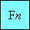
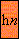
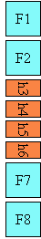
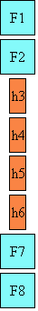
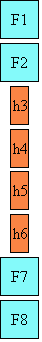

Text
SVG2 Requirement: Require automatic text wrapping in arbitrary shapes compatible with CSS.
Resolution: SVG2 will require automatic textwrapping compatible with CSS.
Conference call 2012-11-17.
Purpose: Text in flow charts, etc.
Owner: Tav.
SVG2 Requirement: Support glyphs being aligned to different baselines, perhaps by using existing or improved CSS properties
Resolution: SVG2 will support glyphs being aligned to different baselines, perhaps by using existing or improved CSS properties.
Pre-TPAC F2F Day 1.
Purpose: Allows aligning of different sized glyphs along a baseline other than alphabetic.
Owner: Chris.
SVG2 Requirement: Clarify the stretch method for textpath.
Resolution: We will clarify method=stretch on textPath elements.
Conference call 2011-11-17.
Purpose: Better definition of how glyphs should be stretched.
Owner: Cameron.
SVG2 Requirement: Have a way to specify flip-invariant text.
Resolution: SVG2 will have a way to specify flip-invariant text.
Conference call 2011-11-17.
Purpose: Keep text readable if image flipped.
Owner: Doug.
SVG2 Requirement: Allow transforms on tspan.
Resolution: SVG2 will allow transforms on tspan.
Conferene call 2011-12-01.
Purpose: Align with other elements such as <a> which already allow transforms.
Owner: Cameron.
SVG2 Requirement: Have a DOM method to convert a <text> element to outline path data.
Resolution: Add a DOM method to convert a <text> element to outline path data and possible migrate to fx.
Sydney F2F day 4.
Purpose: Allow manipulation of text as a path (while still keeping it as text).
Owner: Cameron.
SVG2 Requirement: Include the improved text from SVG Tiny 1.2 on characters and glyphs, text layout, text selection, text search.
Resolution: SVG 2 will include the improved text from SVG Tiny 1.2 on characters and glyphs, text layout, text selection, text search.
Conference call 2012-02-02.
Purpose: Include more clear SVG Tiny 1.2 text, no functional change.
Owner: Chris (Action-3236).
SVG2 Requirement: Use CSS3 definitions for text layout (whitespacing, bidi, etc) that is not specific to SVG.
Resolution: SVG2 will use CSS3 definitions for text layout (whitespacing, bidi, etc) that is not specific to SVG.
Seattle 2011 F2F Day 3.
Purpose: Align with CSS3.
Owner: Cameron, Chris (Action-3004, Action-3005).
SVG2 Requirement: Add text-overflow.
Resolution: We will add text-overflow in SVG2.
Conference call 2011-03-03.
Purpose: Align with CSS. Indicate that not all text is shown.
Owner: Erik.
SVG2 Requirement: Remove the restriction of tref pointing to only an SVG document fragment.
Resolution: We agree to remove the restriction of tref pointing to only an SVG document fragment.
Mountain View F2F 2009 Day 1.
Purpose: Allow easier text substitution.
Owner: Cameron (Action-3130).
SVG2 Requirement: Deprecate baseline-shift and use vertical-align instead
Resolution: SVG 2 will deprecate baseline-shift and use vertical-align
(although we will not actually deprecate baseline-shift, but incorporate
the vertical-align shorthand and all the baseline properties that css3-linebox
defines)
Sydney F2F 2012 Day 4.
Purpose: To align with CSS.
Owner: Cameron (ACTION-3281)
Introduction
Text that is to be rendered as part of an SVG document fragment is
specified using the 'text' element. The characters to be drawn are
expressed as XML character data
([XML10], section 2.4)
inside the 'text' element.
SVG's 'text' elements are rendered like other graphics elements.
Thus, coordinate system transformations,
painting, clipping and
masking features apply to 'text' elements in
the same way as they apply to shapes such as
paths and rectangles.
Each 'text' element causes a single string of text to be rendered.
SVG performs no automatic line breaking or word wrapping. To achieve the
effect of multiple lines of text, use one of the following methods:
- The author or authoring package needs to pre-compute the line breaks and
use multiple 'text' elements (one for each line of text).
- The author or authoring package needs to pre-compute the line breaks and
use a single 'text' element with one or more 'tspan' child
elements with appropriate values for attributes 'tspan/x', 'tspan/y',
'tspan/dx' and 'tspan/dy' to set new start positions for those characters
which start new lines. (This approach allows user text selection across
multiple lines of text -- see
Text selection and clipboard operations.)
- Express the text to be rendered in another XML namespace such as XHTML
[XHTML] embedded inline within a
'foreignObject' element. (Note: the exact semantics of this approach
are not completely defined at this time.)
The text strings within 'text' elements can be rendered in a
straight line or rendered along the outline of a 'path' element.
SVG supports the following international text processing features for
both straight line text and text on a path:
- horizontal and vertical orientation of text
- left-to-right or bidirectional text (i.e., languages
which intermix right-to-left and left-to-right text, such as
Arabic and Hebrew)
- when SVG fonts are
used, automatic selection of the correct glyph corresponding
to the current form for
Arabic
and Han
text
(The layout rules for straight line text are described in
Text layout. The layout rules for text on a
path are described in Text on a path
layout rules.)
Because SVG text is packaged as XML character data:
- Text data in SVG content is readily accessible to the visually impaired
(see Accessibility Support)
- In many viewing scenarios, the user will be able to search for and select
text strings and copy selected text strings to the system clipboard (see
Text selection and clipboard operations)
- XML-compatible Web search engines will find text strings in SVG
content with no additional effort over what they need to do to find
text strings in other XML documents
Multi-language SVG content is possible by substituting
different text strings based on the user's preferred language.
For accessibility reasons, it is recommended that text which is
included in a document have appropriate semantic markup to indicate
its function. See SVG
accessibility guidelines for more information.
Characters and their corresponding glyphs
In XML [XML10], textual content
is defined in terms of a sequence of XML characters,
where each character is defined by a particular Unicode code point
[UNICODE].
Fonts, on the other hand, consist of a collection of
glyphs and other associated information, such as
font tables. A glyph is a
presentable form of one or more characters (or a part of a character in some
cases). Each glyph consists of some sort of identifier (in some cases a string,
in other cases a number) along with drawing instructions for rendering that
particular glyph.
In many cases, there is a one-to-one mapping of Unicode
characters (i.e., Unicode code points) to glyphs in a font. For
example, it is common for a font designed for Latin languages
(where the term Latin is used for European languages
such as English with alphabets similar to and/or derivative to
the Latin language) to contain a single glyph for each of the
standard ASCII characters (i.e., A-to-Z, a-to-z, 0-to-9, plus
the various punctuation characters found in ASCII). Thus, in
most situations, the string "XML", which consists of three
Unicode characters, would be rendered by the three glyphs
corresponding to "X", "M" and "L", respectively.
In various other cases, however, there is not a strict
one-to-one mapping of Unicode characters to glyphs. Some of the
circumstances when the mapping is not one-to-one:
- Ligatures - For best looking typesetting, it is often
desirable that particular sequences of characters are
rendered as a single glyph. An example is the word "office".
Many fonts will define an "ffi" ligature. When the word
"office" is rendered, sometimes the user agent will render
the glyph for the "ffi" ligature instead of rendering
distinct glyphs (i.e., "f", "f" and "i") for each of the
three characters. Thus, for ligatures, multiple Unicode
characters map to a single glyph. (Note that for proper
rendering of some languages, ligatures are required for
certain character combinations.)
- Composite characters - In various situations, commonly
used adornments such as diacritical marks will be stored once
in a font as a particular glyph and then composed with one or
more other glyphs to result in the desired character. For
example, it is possible that a font engine might render the
é character by
first rendering the glyph for e and then rendering the glyph
for ´ (the accent
mark) such that the accent mark will appear over the e. In this situation, a single
Unicode character maps to multiple glyphs.
- Glyph substitution - Some typography systems examine the
nature of the textual content and utilize different glyphs in
different circumstances. For example, in Arabic, the same
Unicode character might render as any of four different
glyphs, depending on such factors as whether the character
appears at the start, the end or the middle of a sequence of
cursively joined characters. Different glyphs might be used
for a punctuation character depending on
inline-progression-direction (e.g., horizontal vs. vertical).
In these situations, a single Unicode character might map to
one of several alternative glyphs.
- In some languages, particular sequences of characters
will be converted into multiple glyphs such that parts of a
particular character are in one glyph and the remainder of
that character is in another glyph.
- Alternative glyph specification - SVG contains a facility
for the author to explicitly specify that a particular
sequence of Unicode characters is to be rendered using a
particular glyph. (See Alternate glyphs.) When
this facility is used, multiple Unicode characters map to a
single glyph.
In many situations, the algorithms for mapping from
characters to glyphs are system-dependent, resulting in the
possibility that the rendering of text might be (usually
slightly) different when viewed in different user environments.
If the author of SVG content requires precise selection of
fonts and glyphs, then the recommendation is that the necessary
fonts (potentially subsetted to include only the glyphs needed
for the given document) be available either as SVG fonts embedded within the
SVG content or as WebFonts
([CSS2], section 15.1)
posted at the same Web location as the SVG content.
Throughout this chapter, the term character shall be equivalent to the
definition of a character in XML [XML10].
Fonts, font tables and baselines
A font consists of a collection of glyphs together with the
information (the font tables) necessary to use those glyphs to
present characters on some medium. The combination of the
collection of glyphs and the font tables is called the font
data. The font tables include the information necessary to
map characters to glyphs, to determine the size of glyph areas
and to position the glyph area. Each font table consists of one
or more font characteristics, such as the font-weight and
font-style.
The geometric font characteristics are expressed in a
coordinate system based on the EM box. (The EM is a relative
measure of the height of the glyphs in the font; see Coordinate units on the em square;
in [CSS2], section 15.4.3.)
The box 1 EM high and 1 EM wide is called the
design space. This space is given a geometric
coordinates by sub-dividing the EM into a number of units
per em.
Note: Units per em is a font characteristic. A typical value
for units per em is 1000 or 2048.
The coordinate space of the EM box is called the design
space coordinate system. For scalable fonts, the curves
and lines that are used to draw a glyph are represented using
this coordinate system.
Note: Most often, the (0,0) point in this coordinate system
is positioned on the left edge of the EM box, but not at the
bottom left corner. The Y coordinate of the bottom of a roman
capital letter is usually zero. And the descenders on lowercase
roman letters have negative coordinate values.
SVG assumes that the font tables will provide at least three
font characteristics: an ascent, a descent and a set of
baseline-tables. The ascent is the distance to the top of the
EM box from the (0,0) point of the font; the descent is the
distance to the bottom of the EM box from the (0.0) point of
the font. The baseline-table is explained below.
Note: Within an OpenType font, for horizontal writing-modes,
the ascent and descent are given by the sTypoAscender and
sTypoDescender entries in the OS/2 table. For vertical
writing-modes, the descent (the distance, in this case from the
(0,0) point to the left edge of the glyph) is normally zero
because the (0,0) point is on the left edge. The ascent for
vertical writing-modes is either 1 em or is specified by the
ideographic top baseline value in the OpenType Base table for
vertical writing-modes.
In horizontal writing-modes, the glyphs of a given script
are positioned so that a particular point on each glyph, the
alignment-point, is
aligned with the alignment-points of the other glyphs in that
script. The glyphs of different scripts, for example, Western,
Northern Indic and Far-Eastern scripts, are typically aligned
at different points on the glyph. For example, Western glyphs
are aligned on the bottoms of the capital letters, northern
indic glyphs are aligned at the top of a horizontal stroke near
the top of the glyphs and far-eastern glyphs are aligned either
at the bottom or center of the glyph. Within a script and
within a line of text having a single font-size, the sequence
of alignment-points defines, in the inline-
progression-direction, a geometric line called a
baseline. Western and most other alphabetic and
syllabic glyphs are aligned to an "alphabetic" baseline, the
northern indic glyphs are aligned to a "hanging" baseline and
the far-eastern glyphs are aligned to an "ideographic"
baseline.
A baseline-table specifies the position of one or
more baselines in the design space coordinate system. The
function of the baseline table is to facilitate the alignment
of different scripts with respect to each other when they are
mixed on the same text line. Because the desired relative
alignments may depend on which script is dominant in a line (or
block), there may be a different baseline table for each
script. In addition, different alignment positions are needed
for horizontal and vertical writing modes. Therefore, the font
may have a set of baseline tables: typically, one or more for
horizontal writing-modes and zero or more for vertical
writing-modes.
Note: Some fonts may not have values for the baseline
tables. Heuristics are suggested for approximating the baseline
tables when a given font does not supply baseline tables.
SVG further assumes that for each glyph in the font data for
a font, there are two width values, two alignment-baselines and
two alignment-points, one each for horizontal writing-modes and
the other for vertical writing-modes. (Even though it is
specified as a width, for vertical writing-modes the width is
used in the vertical direction.) The script to which a glyph
belongs determines an alignment-baseline to which the glyph is
to be aligned. The inline-progression-direction
position of the alignment-point is on the start-edge of the
glyph.
Properties related to baselines are described below under Baseline alignment
properties.
In addition to the font characteristics required above, a
font may also supply substitution and positioning tables that
can be used by a formatter to re-order, combine and position a
sequence of glyphs to make one or more composite glyphs. The
combination may be as simple as a ligature, or as complex as an
indic syllable which combines, usually with some re-ordering,
multiple consonants and vowel glyphs.
The 'text' element
The 'text' element defines
a graphics element consisting of text. The XML
character data within the 'text' element, along with relevant attributes
and properties and character-to-glyph mapping tables within
the font itself, define the glyphs to be rendered. (See
Characters and their corresponding
glyphs.) The attributes and properties on the 'text'
element indicate such things as the writing direction, font
specification and painting attributes which describe how exactly
to render the characters. Subsequent sections of this chapter
describe the relevant text-specific attributes and properties,
particular text layout and
bidirectionality.
Since 'text' elements are
rendered using the same rendering methods as other graphics
elements, all of the same coordinate
system transformations, painting, clipping and masking features that apply to shapes such as paths and rectangles also apply to
'text' elements.
It is possible to apply
a gradient, pattern, clipping path, mask or filter to text. When
one of these facilities is applied to text and keyword
'objectBoundingBox' is used (see
Object bounding box units)
to specify a graphical effect relative to the "object bounding box",
then the object bounding box units are computed relative to the entire
'text' element in all cases, even when different effects
are applied to different 'tspan' elements within the same
'text' element.
The 'text' element renders its first glyph (after
bidirectionality
reordering) at the initial current
text position, which is established by the 'x' and 'y'
attributes on the 'text' element (with possible adjustments
due to the value of the 'text-anchor' property, the presence
of a 'textPath' element containing the first character,
and/or an 'tspan/x', 'tspan/y', 'tspan/dx' or
'tspan/dy' attributes on a 'tspan', 'tref' or
'altGlyph' element which contains the first character). After
the glyph(s) corresponding to the given character is(are) rendered, the
current text position is updated for the next character. In the simplest
case, the new current text position is the previous current text
position plus the glyphs' advance value (horizontal or vertical). See
text layout for a description of glyph
placement and glyph advance.
Attribute definitions:
- x = "<list-of-coordinates>"
- If a single <coordinate>
is provided, then the value represents the new absolute X
coordinate for the current text
position for rendering the glyphs that correspond to
the first character within this element or any of its
descendants.
If a comma- or space-separated list of n <coordinate>s
is provided, then the values represent new absolute X
coordinates for the current text
position for rendering the glyphs corresponding to each
of the first n characters within this element or
any of its descendants.
For additional processing rules, refer to the description
of the 'tspan/x' attribute on the 'tspan' element.
If the attribute is not specified, the effect is as if a
value of "0" were specified.
Animatable:
yes.
- y = "<list-of-coordinates>"
- The corresponding list of absolute Y coordinates for
the glyphs corresponding to the characters within this
element. The processing rules for the 'y' attribute parallel the
processing rules for the 'x' attribute.
If the attribute is not specified, the effect is as if a
value of "0" were specified.
Animatable:
yes.
- dx = "<list-of-lengths>"
- Shifts in the current text
position along the x-axis for the characters within
this element or any of its descendants.
Refer to the description of the 'tspan/dx' attribute on the
'tspan' element.
If the attribute is not specified on this element or any
of its descendants, no supplemental shifts along the x-axis
will occur.
Animatable:
yes.
- dy = "<list-of-lengths>"
- Shifts in the current text
position along the y-axis for the characters within
this element or any of its descendants.
Refer to the description of the 'tspan/dy' attribute on the
'tspan' element.
If the attribute is not specified on this element or any
of its descendants, no supplemental shifts along the y-axis
will occur.
Animatable:
yes.
- rotate = "<list-of-numbers>"
- The supplemental rotation about the current text
position that will be applied to all of the glyphs
corresponding to each character within this element.
Refer to the description of the 'tspan/rotate' attribute on the
'tspan' element.
If the attribute is not specified on this element or any
of its descendants, no supplemental rotations will
occur.
Animatable: yes
(non-additive).
- textLength = "<length>"
- The author's computation of the total sum of all of the
advance values that correspond to character data within
this element, including the advance value on the glyph
(horizontal or vertical), the effect of properties
'kerning', 'letter-spacing' and 'word-spacing'
and adjustments due to attributes 'tspan/dx' and
'tspan/dy' on 'tspan' elements. This
value is used to calibrate the user agent's own
calculations with that of the author.
The purpose of this attribute is to allow the author to
achieve exact alignment, in visual rendering order after
any bidirectional
reordering, for the first and last rendered glyphs that
correspond to this element; thus, for the last rendered
character (in visual rendering order after any bidirectional
reordering), any supplemental inter-character spacing
beyond normal glyph advances are ignored (in most cases)
when the user agent determines the appropriate amount to
expand/compress the text string to fit within a length of
'textLength'.
A negative value is an error (see Error
processing).
If the attribute is not specified, the effect is as if the
author's computation exactly matched the value calculated
by the user agent; thus, no advance adjustments are
made.
Animatable:
yes.
- lengthAdjust = "spacing|spacingAndGlyphs"
- Indicates the type of adjustments which the user agent
shall make to make the rendered length of the text match
the value specified on the 'textLength' attribute.
'spacing' indicates that
only the advance values are adjusted. The glyphs themselves
are not stretched or compressed.
'spacingAndGlyphs' indicates
that the advance values are adjusted and the glyphs
themselves stretched or compressed in one axis (i.e., a
direction parallel to the
inline-progression-direction).
The user agent is required to achieve correct start and
end positions for the text strings, but the locations of
intermediate glyphs are not predictable because user agents
might employ advanced algorithms to stretch or compress
text strings in order to balance correct start and end
positioning with optimal typography.
Note that, for a text string that contains n
characters, the adjustments to the advance values often
occur only for n−1 characters (see description of
attribute 'textLength'), whereas
stretching or compressing of the glyphs will be applied to
all n characters.
If the attribute is not specified, the effect is as a
value of 'spacing' were
specified.
Animatable:
yes.
- width = "<length>"
- Indicates the maximum length that the text is allowed to have
before being subject to 'text-overflow' handling.
Whenever the sum of advances (including properties 'kerning', 'letter-spacing' and 'word-spacing' and
adjustments due to attributes 'dx' and 'dy' on 'tspan' elements) computed by the user agent exceeds
the given width the 'text' element is subject to 'text-overflow' processing.
The given width does not affect SVG DOM methods for measuring text, but
does affect the boundingbox of the element.
The lacuna value for 'width' is as if the attribute wasn't specified.
Animatable:
yes.
Example text01 below
contains the text string "Hello, out there" which will be
rendered onto the canvas using the Verdana font family with the
glyphs filled with the color blue.
The 'tspan' element
Within a 'text' element, text and font properties and the
current text position can be
adjusted with absolute or relative coordinate values by including a
'tspan' element.
Attribute definitions:
- x = "<list-of-coordinates>"
- If a single <coordinate>
is provided, then the value represents the new absolute X
coordinate for the current text
position for rendering the glyphs that correspond to
the first character within this element or any of its
descendants.
If a comma- or space-separated list of n <coordinate>s
is provided, then the values represent new absolute X
coordinates for the current text
position for rendering the glyphs corresponding to each
of the first n characters within this element or
any of its descendants.
If more <coordinate>s
are provided than characters, then the extra <coordinate>s
will have no effect on glyph positioning.
If more characters exist than <coordinate>s,
then for each of these extra characters: (a) if an ancestor
'text' or 'tspan' element specifies
an absolute X coordinate for the given character via an
'x' attribute, then that
absolute X coordinate is used as the starting X coordinate
for that character (nearest ancestor has precedence), else
(b) the starting X coordinate for rendering the glyphs
corresponding to the given character is the X coordinate of
the resulting current text
position from the most recently rendered glyph for the
current 'text' element.
If the attribute is not specified: (a) if an ancestor 'text'
or 'tspan' element specifies
an absolute X coordinate for a given character via an
'x' attribute, then that absolute X
coordinate is used (nearest ancestor has precedence), else
(b) the starting X coordinate for rendering the glyphs
corresponding to a given character is the X coordinate of
the resulting current text
position from the most recently rendered glyph for the
current 'text' element.
Animatable:
yes.
- y = "<list-of-coordinates>"
- The corresponding list of absolute Y coordinates for
the glyphs corresponding to the characters within this
element. The processing rules for the 'y' attribute parallel the
processing rules for the 'x' attribute.
Animatable:
yes.
- dx = "<list-of-lengths>"
- If a single <length> is
provided, this value represents the new relative X
coordinate for the current text
position for rendering the glyphs corresponding to the
first character within this element or any of its
descendants. The current text
position is shifted along the x-axis of the current
user coordinate system by <length> before
the first character's glyphs are rendered.
If a comma- or space-separated list of n <length>s is
provided, then the values represent incremental shifts
along the x-axis for the current text
position before rendering the glyphs corresponding to
the first n characters within this element or any
of its descendants. Thus, before the glyphs are rendered
corresponding to each character, the current text
position resulting from drawing the glyphs for the
previous character within the current 'text' element is shifted
along the X axis of the current user coordinate system by
<length>.
If more <length>s are
provided than characters, then any extra <length>s will
have no effect on glyph positioning.
If more characters exist than <length>s, then
for each of these extra characters: (a) if an ancestor
'text' or 'tspan' element specifies a
relative X coordinate for the given character via a
'dx' attribute, then the current text
position is shifted along the x-axis of the current
user coordinate system by that amount (nearest ancestor has
precedence), else (b) no extra shift along the x-axis
occurs.
If the attribute is not specified: (a) if an ancestor 'text'
or 'tspan' element specifies a
relative X coordinate for a given character via a
'dx' attribute, then the current text
position is shifted along the x-axis of the current
user coordinate system by that amount (nearest ancestor has
precedence), else (b) no extra shift along the x-axis
occurs.
Animatable:
yes.
- dy = "<list-of-lengths>"
- The corresponding list of relative Y coordinates for
the characters within the 'tspan' element. The processing
rules for the 'dy' attribute
parallel the processing rules for the
'dx' attribute.
Animatable:
yes.
- rotate = "<list-of-numbers>"
- The supplemental rotation about the current text
position that will be applied to all of the glyphs
corresponding to each character within this element.
If a comma- or space-separated list of <number>s is
provided, then the first <number>
represents the supplemental rotation for the glyphs
corresponding to the first character within this element or
any of its descendants, the second <number>
represents the supplemental rotation for the glyphs that
correspond to the second character, and so on.
If more <number>s are
provided than there are characters, then the extra <number>s will
be ignored.
If more characters are provided than <number>s, then
for each of these extra characters the rotation value specified by the
last number must be used.
If the attribute is not specified and if an ancestor 'text' or
'tspan' element specifies a supplemental rotation for a given
character via a 'rotate' attribute, then the given supplemental
rotation is applied to the given character (nearest ancestor has
precedence). If there are more characters than <number>s specified in the
ancestor's 'rotate' attribute, then for each of these extra
characters the rotation value specified by the last number must be used.
This supplemental rotation has no impact on the rules by
which current text
position is modified as glyphs get rendered and is
supplemental to any rotation due to text on a path and to
'glyph-orientation-horizontal'
or 'glyph-orientation-vertical'.
Animatable: yes
(non-additive).
- textLength = "<length>"
- The author's computation of the total sum of all of the
advance values that correspond to character data within
this element, including the advance value on the glyph
(horizontal or vertical), the effect of properties 'kerning',
'letter-spacing' and 'word-spacing' and adjustments due
to attributes 'dx' and 'dy' on this 'tspan'
element or any descendants. This value is used to calibrate the user
agent's own calculations with that of the author.
The purpose of this attribute is to allow the author to
achieve exact alignment, in visual rendering order after
any bidirectional
reordering, for the first and last rendered glyphs that
correspond to this element; thus, for the last rendered
character (in visual rendering order after any bidirectional
reordering), any supplemental inter-character spacing
beyond normal glyph advances are ignored (in most cases)
when the user agent determines the appropriate amount to
expand/compress the text string to fit within a length of
'textLength'.
If attribute 'textLength' is
specified on a given element and also specified on an
ancestor, the adjustments on all character data within this
element are controlled by the value of 'textLength' on this element
exclusively, with the possible side-effect that the
adjustment ratio for the contents of this element might be
different than the adjustment ratio used for other content
that shares the same ancestor. The user agent must assume
that the total advance values for the other content within
that ancestor is the difference between the advance value
on that ancestor and the advance value for this
element.
A negative value is an error (see Error
processing).
If the attribute is not specified anywhere within a
'text' element, the effect
is as if the author's computation exactly matched the value
calculated by the user agent; thus, no advance adjustments
are made.
Animatable:
yes.
The 'x', 'y', 'dx', 'dy' and
'rotate' on the 'tspan' element are useful in
high-end typography scenarios where individual glyphs require
exact placement. These attributes are useful for minor
positioning adjustments between characters or for major
positioning adjustments, such as moving the current text position
to a new location to achieve the visual effect of a new line of
text. Multi-line 'text' elements are possible by
defining different 'tspan'
elements for each line of text, with attributes 'x', 'y',
'dx' and/or 'dy' defining the position of each
'tspan'. (An advantage of
such an approach is that users will be able to perform
multi-line text
selection.)
In situations where micro-level positioning adjustment are
necessary for advanced typographic control, the SVG content
designer needs to ensure that the necessary font will be
available for all viewers of the document (e.g., package up the
necessary font data in the form of an SVG font or an
alternative WebFont
format which is stored at the same Web site as the SVG content)
and that the viewing software will process the font in the
expected way (the capabilities, characteristics and font layout
mechanisms vary greatly from system to system). If the SVG
content contains 'x', 'y', 'dx' or
'dy' attribute values which are
meant to correspond to a particular font processed by a
particular set of viewing software and either of these
requirements is not met, then the text might display with poor
quality.
The following additional rules apply to attributes 'x',
'y', 'dx', 'dy' and 'rotate' when they
contain a list of numbers:
- When a single XML character maps to a single glyph - In
this case, the i-th value for the
'x', 'y', 'dx', 'dy' and 'rotate'
attributes is applied to the glyph that corresponds to the i-th character.
- When a single XML character maps to multiple glyphs (e.g., when an
accent glyph is placed on top of a base glyph) - In this case, the
i-th value for the 'x',
'y', 'dx' and 'dy' values are applied (i.e., the
current text position is
adjusted) before rendering the first glyph. The rotation transformation
corresponding to the i-th 'rotate'
value is applied to the glyphs and to the inter-glyph advance values
corresponding to this character on a group basis (i.e., the rotation
value creates a temporary new rotated coordinate system, and the glyphs
orresponding to the character are rendered into this rotated coordinate
system).
- When multiple XML characters map to a single
glyph (e.g., when a ligature is used) - Suppose
that the i-th
and (i+1)-th XML
characters map to a single glyph. In this case, the i-th value for the 'x',
'y', 'dx', 'dy' and 'rotate'
attributes all apply when rendering the glyph. The (i+1)-th values, however, for
'x', 'y' and 'rotate' are ignored (exception:
the final 'rotate' value in the list would still apply to
subsequent characters), whereas the 'dx' and 'dy'
are applied to the subsequent XML character (i.e., the (i+2)-th character), if one exists,
by translating the current
text position by the given amounts before rendering the first
glyph associated with that character.
- When there is a many-to-many mapping of characters to
glyphs (e.g., when three characters map to two glyphs, such as
when the first glyph expresses the first character and half
of the second character, and the second glyph expresses the
other half of the second character plus the third character)
- Suppose that the i-th,
(i+1)-th and (i+2)-th XML characters map to two
glyphs. In this case, the i-th
value for the 'x', 'y', 'dx'
and 'dy' values are applied (i.e., the current text
position is adjusted) before rendering the first glyph.
The rotation transformation corresponding to the i-th 'rotate' value is
applied to both the two glyphs and the glyph advance values
for the first glyph on a group basis (i.e., the rotation value
creates a temporary new rotated coordinate system, and the
two glyphs are rendered into the temporary rotated coordinate
system). The (i+1)-th and
(i+2)-th values, however,
for the 'x', 'y' and 'rotate' attributes
are not applied (exception: the final 'rotate' value in
the list would still apply to subsequent characters), whereas
the (i+1)-th and (i+2)-th values for the 'dx'
and 'dy' attributes are applied to the subsequent XML
character (i.e., the (i+3)-th
character), if one exists, by translating the current text position by
the given amounts before rendering the first glyph associated with
that character.
-
Relationship to bidirectionality
- As described below in the discussion on
bidirectionality,
text is laid out in a two-step process, where any
bidirectional text is first re-ordered into a left-to-right
string, and then text layout occurs with the re-ordered
text string. Whenever the character data within a 'tspan' element is re-ordered,
the corresponding elements within the 'x', 'y',
'dx', 'dy' and 'rotate' are also re-ordered
to maintain the correspondence. For example, suppose that you have
the following 'tspan' element:
<tspan dx="11 12 13 14 15 0 21 22 23 0 31 32 33 34 35 36">Latin and Hebrew</tspan>
and that the word "Hebrew" will be drawn right-to-left. First, the
character data and the corresponding values in the 'dx'
list will be reordered, such that the text string will be "Latin
and werbeH" and the list of values for the 'dx' attribute
will be "11 12 13 14 15 0 21 22 23 0 36 35 34 33 32 31". After
this re-ordering, the glyphs corresponding to the characters will
be positioned using standard left-to-right layout rules.
The following examples show basic use of the 'tspan' element.
Example tspan01 uses a
'tspan' element to indicate
that the word "not" is to use a bold font and have red
fill.
Example tspan02
uses the 'dx' and 'dy' attributes on the 'tspan'
element to adjust the current text position
horizontally and vertically for particular text strings within a
'text' element.
Example tspan03
uses the 'x' and 'y' attributes on the
'tspan' element to establish a new absolute
current text position for each
glyph to be rendered. The example shows two lines of text within a single
'text' element. Because both lines of text are within the same
'text' element, the user will be able to select through both lines
of text and copy the text to the system clipboard in user agents that
support text selection and clipboard operations.
Example tspan04 uses the
'rotate' attribute on the 'tspan' element to rotate the
glyphs to be rendered. This example shows a single text string in a
'tspan' element that contains more characters than the number
of values specified in the 'rotate' attribute. In this case the
last value specified in the 'rotate' attribute of the
'tspan' must be applied to the remaining characters in the
string.
Example tspan05 specifies the
'rotate' attribute on the 'text' element and on all but
one of the child 'tspan' elements to rotate the glyphs to be
rendered. The example demonstrates the propagation of the
'rotate' attribute.
Rotation of red text inside the 'text' element:
-
The 'rotate' value will rotate the characters in the text
"Not " by 5, 15, 25 and 35 degrees respectively.
-
A 'rotate' value is applied to the space that follows the
text "Not", to the space in between the text in the
"child1" and "child5" 'tspan' elements, and to the space
before the text "rotation".
-
The next current 'rotate' value specified is 45 followed
by 55. The current 'rotate' value in the 'text'
element is incremented as subsequent characters in the text of the
child 'tspan' elements are processed.
-
The next immediate 'tspan' element specifies rotate values
for the text, hence the current 'rotate' value will change to
the next value in the list (but is not used) as each character is
processed until the last value of 55 degrees is reached.
-
The last 'rotate' value of 55 degrees will be applied to all
the characters in the text "rotation".
Rotation of the orange text inside the "child1" 'tspan'element:
-
The 'rotate' value will rotate the first 4 characters in the
text "all characters " by -10, -20, -30 and -40
respectively.
-
The last 'rotate' value of -40 becomes the current
'rotate' value and will be applied to all subsequent
characters in the 'tspan' element and to any child
'tspan' elements that do not specify 'rotate'
values.
-
The "child4" 'tspan' element does not specify any
'rotate' values and thus uses the current 'rotate' of
its ancestor ("child1" 'tspan' element). All the characters
in the text "text" specified within the "child4"
'tspan' element will be rotated by -40 degrees.
-
The last 'rotate' value of -40 degrees will be applied to all
the characters in the text "have a".
-
A 'rotate' value is applied to the space in between the text
in the "child2" and "child4" 'tspan' elements, and to the
space before the text "have a".
Rotation of the yellow text inside the "child2" 'tspan'element:
-
The 'rotate' value will rotate the characters in the (yellow)
text "in " by 70, 60, and 50 degrees respectively.
-
A 'rotate' value is applied to the space that follows the
text "in".
-
There are more 'rotate' values specified than characters,
thus the additional 'rotate' values will be applied to the
"child3" 'tspan' element which does not specified any
'rotate' values.
-
The characters in the text "the" specified within the
"child3" 'tspan' element will be rotated 40, 30 and 20
degrees respectively.
Rotation of the blue text inside the "child5" 'tspan' element:
-
The 'rotate' value will rotate all the characters in text
"specified" by -10 degrees.
-
Only one 'rotate' value is specified and is thus
applied to all characters in the 'tspan' element.
The following diagram illustrates how the rotation values propagate to
'tspan' elements nested withing a 'text' element:

The 'tref' element
The textual content for a 'text' can be either character data
directly embedded within the 'text' element or the character data
content of a referenced element, where the referencing is specified with a
'tref' element.
Attribute definitions:
- xlink:href = "<iri>"
- An IRI reference to an element
whose character data content shall be used as
character data for this 'tref' element.
Animatable:
yes.
All character data within the referenced element, including
character data enclosed within additional markup, will be
rendered.
The 'x', 'y', 'dx', 'dy' and 'rotate'
attributes have the same meanings as for the 'tspan' element. The
attributes are applied as if the 'tref' element was replaced by a
'tspan' with the referenced character data (stripped of all
supplemental markup) embedded within the hypothetical 'tspan' element.
Example tref01 shows
how to use character data from a different element as the character data
for a given 'tspan' element. The first 'text' element (with
id="ReferencedText") will not draw because
it is part of a 'defs' element. The second 'text' element
draws the string "Inline character data". The third 'text' element
draws the string "Reference character data" because it includes a
'tref' element which is a reference to element "ReferencedText",
and that element's character data is "Referenced character data".
Text layout
This section describes the text layout features supported by
SVG, which includes support for various international writing
directions, such as left-to-right (e.g., Latin scripts) and
bidirectional (e.g., Hebrew or Arabic) and vertical (e.g.,
Asian scripts). The descriptions in this section assume
straight line text (i.e., text that is either strictly
horizontal or vertical with respect to the current user
coordinate system). Subsequent sections describe the
supplemental layout rules for text on a path.
SVG does not provide for automatic line breaks or word
wrapping, which makes internationalized text layout for SVG
relatively simpler than it is for languages which support
formatting of multi-line text blocks.
For each 'text' element, the SVG user
agent determines the current reference
orientation. For standard horizontal or vertical text
(i.e., no text-on-a-path), the reference orientation is the
vector pointing towards negative infinity in Y within the
current user coordinate system. (Note: in the initial coordinate
system, the reference orientation is up.) For text on a path, the reference
orientation is reset with each character.
Based on the reference orientation and the value for
property 'writing-mode', the SVG user agent
determines the current inline-progression-direction. For
left-to-right text, the inline-progression-direction points 90
degrees clockwise from the reference orientation vector. For
right-to-left text, the inline progression points 90 degrees
counter-clockwise from the reference orientation vector. For
top-to-bottom text, the inline-progression-direction points 180
degrees from the reference orientation vector.
Based on the reference orientation and the value for
property 'writing-mode', the SVG user agent
determines the current block-progression-direction. For
left-to-right and right-to-left text, the
block-progression-direction points 180 degrees from the
reference orientation vector because the only available
horizontal 'writing-mode's are lr-tb and rl-tb. For top-to-bottom text, the
block-progression-direction always points 90 degrees
counter-clockwise from the reference orientation vector because
the only available top-to-bottom 'writing-mode' is tb-rl.
The shift direction is the
direction towards which the baseline table moves
due to positive values for property 'baseline-shift'. The shift
direction is such that a positive value shifts the baseline
table towards the topmost entry in the parent's baseline table.
In processing a given 'text' element, the SVG user
agent keeps track of the current text
position. The initial current text position is
established by the 'text/x' and 'text/y' attributes on the 'text' element.
The current text position is adjusted after each glyph to
establish a new current text position at which the next glyph
shall be rendered. The adjustment to the current text position
is based on the current inline-progression-direction,
glyph-specific advance values corresponding to the glyph orientation of the
glyph just rendered, kerning tables in the font and the current
values of various attributes and properties, such as the spacing properties and
any 'tspan/x', 'tspan/y', 'tspan/dx' and
'tspan/dy' attributes on 'text', 'tspan',
'tref' or 'altGlyph' elements. If a glyph
does not provide explicit advance values corresponding to the
current glyph
orientation, then an appropriate approximation should be
used. For vertical text, a suggested approximation is the sum
of the ascent and descent values for the glyph. Another
suggested approximation for an advance value for both
horizontal and vertical text is the size of an em (see
units-per-em).
For each glyph to be rendered, the SVG user agent determines
an appropriate alignment-point on
the glyph which will be placed exactly at the current text
position. The alignment-point is determined based on glyph cell
metrics in the glyph itself, the current inline-progression-direction
and the glyph
orientation relative to the inline-progression-direction.
For most uses of Latin text (i.e.,
writing-mode:lr,
text-anchor:start and
alignment-baseline:baseline)
the alignment-point in the glyph will be the intersection of
left edge of the glyph cell (or some other glyph-specific
x-axis coordinate indicating a left-side origin point) with the
Latin baseline of the glyph. For many cases with top-to-bottom
vertical text layout, the reference point will be either a
glyph-specific origin point based on the set of vertical
baselines for the font or the intersection of the center of the
glyph with its top line (see
Top Baseline;
in [CSS2], section 15.4.18). If a glyph does not
provide explicit origin points corresponding to the current glyph orientation, then
an appropriate approximation should be used, such as the
intersection of the left edge of the glyph with the appropriate
horizontal baseline for the glyph or intersection of the top
edge of the glyph with the appropriate vertical baseline. If
baseline tables are not available, user agents should establish
baseline tables that reflect common practice.
Adjustments to the current text position are either
absolute position adjustments or
relative position adjustments. An
absolute position adjustment occurs in the following
circumstances:
All other position adjustments to the current text position
are relative position adjustments.
Each absolute position adjustment defines a new
text chunk. Absolute position
adjustments impact text layout in the following ways:
- Ligatures only occur when a set of characters which might
map to a ligature are all in the same text chunk.
- Each text chunk represents a separate block of text for
alignment due to 'text-anchor' property values.
- Reordering of characters due to bidirectionality
only occurs within a text chunk. Reordering does not
happen across text chunks.
The following additional rules apply to ligature formation:
- As defined in CSS2,
([CSS2], section 16.4),
when the resultant space between two characters is not the
same as the default space, user agents should not use
ligatures; thus, if there are non-default values for
properties 'kerning' or 'letter-spacing', the user agent
should not use ligatures.
- Ligature formation should not be enabled for the glyphs
corresponding to characters within different DOM text nodes;
thus, characters separated by markup should not use
ligatures.
- As mentioned above, ligature formation should not be
enabled for the glyphs corresponding to characters within
different text chunks.
Setting the inline-progression-direction
The 'writing-mode' property specifies whether the initial
inline-progression-direction for a 'text' element shall be
left-to-right, right-to-left, or top-to-bottom. The 'writing-mode'
property applies only to 'text' elements; the property is ignored for
'tspan', 'tref', 'altGlyph' and 'textPath'
sub-elements. (Note that the inline-progression-direction can change within
a 'text' element due to the Unicode bidirectional algorithm and
properties 'direction' and 'unicode-bidi'. For more on
bidirectional text, see
Relationship with bidirectionality.)
- 'writing-mode'
-
| Value: |
lr-tb | rl-tb | tb-rl | lr | rl | tb |
inherit |
| Initial: |
lr-tb |
| Applies to: |
'text' elements |
| Inherited: |
yes |
| Percentages: |
N/A |
| Media: |
visual |
| Animatable: |
no |
- lr-tb | lr
- Sets the initial inline-progression-direction to
left-to-right, as is common in most Latin-based documents.
For most characters, the current text position is
advanced from left to right after each glyph is rendered.
(When the character data includes characters which are
subject to the Unicode bidirectional algorithm, the text
advance rules are more complex. See Relationship
with bidirectionality).
- rl-tb | rl
- Sets the initial inline-progression-direction to
right-to-left, as is common in Arabic or Hebrew scripts. (See
Relationship
with bidirectionality.)
- tb-rl | tb
- Sets the initial inline-progression-direction to
top-to-bottom, as is common in some Asian scripts, such as
Chinese and Japanese. Though hardly as frequent as
horizontal, this type of vertical layout also occurs in Latin
based documents, particularly in table column or row labels.
In most cases, the vertical baselines running through the
middle of each glyph are aligned.
Glyph orientation within a text run
In some cases, it is required to alter the orientation of a
sequence of characters relative to the
inline-progression-direction. The requirement is particularly
applicable to vertical layouts of East Asian documents, where
sometimes narrow-cell Latin text is to be displayed
horizontally and other times vertically.
Two properties control the glyph orientation relative to the
reference orientation for each of the two possible
inline-progression-directions. 'glyph-orientation-vertical' controls
glyph orientation when the inline-progression-direction is
vertical. 'glyph-orientation-horizontal'
controls glyph orientation when the
inline-progression-direction is horizontal.
- 'glyph-orientation-vertical'
-
- auto
-
-
Fullwidth ideographic and fullwidth Latin text will
be set with a glyph-orientation of 0-degrees.
Ideographic punctuation and other ideographic
characters having alternate horizontal and vertical
forms will use the vertical form of the glyph.
-
Text which is not fullwidth will be set with a
glyph-orientation of 90-degrees.
This reorientation rule applies only to the
first-level non-ideographic text. All further embedding
of writing-modes or bidi processing will be based on
the first-level rotation.
NOTE:
-
This is equivalent to having set the
non-ideographic text string horizontally honoring
the bidi-rule, then rotating the resultant
sequence of inline-areas (one area for each
change of glyph direction) 90-degrees
clockwise.
It should be noted that text set in this
"rotated" manner may contain ligatures or other
glyph combining and reordering common to the
language and script. (This "rotated" presentation
form does not disable auto-ligature formation or
similar context-driven variations.)
-
The determination of which characters should
be auto-rotated may vary across user agents. The
determination is based on a complex interaction
between country, language, script, character
properties, font, and character context. It is
suggested that one consult the Unicode TR 11 and
the various JIS or other national standards.
- <angle>
- The value of the angle is restricted to 0, 90, 180, and
270 degrees. The user agent shall round the value of the
angle to the closest of the permitted values.
A value of 0deg indicates
that all glyphs are set with the top of the glyphs oriented
towards the reference
orientation. A value of 90deg indicates an orientation of
90 degrees clockwise from the reference
orientation.
This property is applied only to text written in a vertical
'writing-mode'.
The glyph orientation affects the amount that the current
text position advances as each glyph is rendered. When the
inline-progression-direction is vertical and the 'glyph-orientation-vertical' results
in an orientation angle that is a multiple of 180 degrees, then
the current text position is incremented according to the
vertical metrics of the glyph. Otherwise, if the 'glyph-orientation-vertical' results
in an orientation angle that is not a multiple of 180 degrees,
then the current text position is incremented according to the
horizontal metrics of the glyph.
The text layout diagrams in this section use the following
symbols:
|  |
wide-cell glyph (e.g. Han) which is the n-th glyph in the text run |
|---|
|  |
narrow-cell glyph (e.g. Latin) which is the n-th glyph in the text run |
|---|
The orientation which the above symbols assume in the
diagrams corresponds to the orientation that the Unicode
characters they represent are intended to assume when rendered
in the user agent. Spacing between the glyphs in the diagrams
is usually symbolic, unless intentionally changed to make a
point.
The diagrams below illustrate different uses of 'glyph-orientation-vertical'. The
diagram on the left shows the result of the mixing of
full-width ideographic glyphs with narrow-cell Latin glyphs
when 'glyph-orientation-vertical' for the
Latin characters is either auto
or 90. The diagram on the right
show the result of mixing full-width ideographic glyphs with
narrow-cell Latin glyphs when Latin glyphs are specified to
have a 'glyph-orientation-vertical' of 0.
 

- 'glyph-orientation-horizontal'
-
- <angle>
- The value of the angle is restricted to 0, 90, 180, and
270 degrees. The user agent shall round the value of the
angle to the closest of the permitted values.
A value of 0deg indicates
that all glyphs are set with the top of the glyphs oriented
towards the reference
orientation. A value of 90deg indicates an orientation of
90 degrees clockwise from the reference
orientation.
This property is applied only to text written in a
horizontal 'writing-mode'.
The glyph orientation affects the amount that the current
text position advances as each glyph is rendered. When the
reference orientation direction is horizontal and the 'glyph-orientation-horizontal' results
in an orientation angle that is a multiple of 180 degrees, then
the current text position is incremented according to the
horizontal metrics of the glyph. Otherwise, if the 'glyph-orientation-horizontal' results
in an orientation angle that is not a multiple of 180 degrees,
then the current text position is incremented according to the
vertical metrics of the glyph.
Relationship with bidirectionality
The characters in certain scripts are written from right to
left. In some documents, in particular those written with the
Arabic or Hebrew script, and in some mixed-language contexts,
text in a single line may appear with mixed directionality.
This phenomenon is called bidirectionality, or "bidi" for
short.
The Unicode standard ([UNICODE],
specifically [UAX9]) defines a
complex algorithm for determining the proper directionality of
text. The algorithm consists of an implicit part based on
character properties, as well as explicit controls for
embeddings and overrides. The
SVG user agent
applies this bidirectional algorithm when determining the layout of characters within a
text content block element.
The 'direction'
and 'unicode-bidi'
properties allow authors to override the inherent directionality
of the content characters and thus explicitly control how the
elements and attributes of a document language map to this algorithm. These
two properties are applicable to all characters whose glyphs are
perpendicular to the inline-progression-direction.
In many cases, the bidirectional algorithm from Unicode
[UNICODE] produces the desired
result automatically, and in such cases the author does not need
to use these properties. For other cases, such as when using
right-to-left languages, it may be sufficient to add the
'direction' property to the rootmost 'svg' element,
and allow that direction to inherit to all text elements,
as in the following example (which may be used as a template):
Below is another example, where where implicit bidi reordering is not sufficient:
Within text content elements,
the alignment of text with regards to the
'text-anchor' property
is determined by the value of the
'direction'
property. For example, given a
'text'
element with a
'text-anchor'
value of "end", for a
'direction'
value of "ltr", the text will
extend to the left of the position of the
'text'
element's
'x'
attribute value, while for
'direction'
value of "rtl", the text will
extend to the right of the position of the
'text'
element's
'x'
attribute value.
A more complete discussion of bidirectionality can be found
in the Text direction
section of CSS 2 ([CSS2], section 9.10).
The processing model for bidirectional text is as follows.
The user agent processes the characters which are provided in
logical order (i.e., the order
the characters appear in the original document, either via
direct inclusion or via indirect reference due a 'tref' element). The user agent
determines the set of independent blocks within each of which
it should apply the Unicode bidirectional algorithm. Each text chunk represents an
independent block of text. Additionally, any change in glyph
orientation due to processing of properties 'glyph-orientation-horizontal' or
'glyph-orientation-vertical' will
subdivide the independent blocks of text further. After
processing the Unicode bidirectional algorithm and properties
'direction' and 'unicode-bidi' on each of the
independent text blocks, the user agent will have a potentially
re-ordered list of characters which are now in left-to-right
rendering order. Simultaneous with re-ordering of the
characters, the dx, dy and rotate attributes on the 'tspan' and 'tref' elements are also
re-ordered to maintain the original correspondence between
characters and attribute values. While kerning or ligature
processing might be font-specific, the preferred model is that
kerning and ligature processing occurs between combinations of
characters or glyphs after the characters have been
re-ordered.
This property specifies the base writing direction of text
and the direction of embeddings and overrides (see 'unicode-bidi') for the Unicode
bidirectional algorithm. For the 'direction' property to have any
effect on an element that does not by itself establish a new text chunk
(such as a 'tspan' element without absolute position adjustments due to 'tspan/x' or 'tspan/y' attributes),
the 'unicode-bidi' property's value
must be embed or bidi-override.
Except for any additional information provided in this
specification, the normative definition
of the 'direction' property is in CSS2
([CSS2], section 9.10).
The 'direction' property
applies only to glyphs oriented perpendicular to the inline-progression-direction,
which includes the usual case of horizontally-oriented Latin or
Arabic text and the case of narrow-cell Latin or Arabic
characters rotated 90 degrees clockwise relative to a
top-to-bottom inline-progression-direction.
Except for any additional information provided in this
specification, the normative definition
of the 'unicode-bidi' property is in CSS2
([CSS2], section 9.10).
Text rendering order
The glyphs associated with the characters within a 'text' element are rendered in
the logical order of the characters in the original document,
independent of any re-ordering necessary to implement
bidirectionality. Thus, for text that goes right-to-left
visually, the glyphs associated with the rightmost character
are rendered before the glyphs associated with the other
characters.
Additionally, each distinct glyph is rendered in its
entirety (i.e., it is filled and stroked as specified by the 'fill'
and 'stroke' properties) before the
next glyph gets rendered.
Text overflow processing
New in SVG 2.
Added to allow user agents to handle text strings that overflow a predefined width in a more useful way.
Aligns SVG and HTML/CSS text processing.
See the CSS3 UI specification for the definition
of 'text-overflow'.
[CSS3UI]
SVG uses the 'text-overflow' property to control how text content block elements
render when the text overflows a specified 'width'.
When applied to a text content block element setting 'text-overflow' to
ellipsis then if the text that is to be rendered
overflows the specified 'width' an ellipsis is rendered such that it fits
within the given width. For the purposes of rendering the ellipsis is treated as if it replaced the characters at
the point where it is inserted. The text positioning attributes
('text/x', 'text/y', 'text/dx', 'text/dy', 'text/rotate') apply to the ellipsis
as if it was one character in the logical document order mapping to one glyph.
In SVG 'text-overflow' has an effect if there is a validly specified 'text/width' attribute, regardless of the
computed value of the 'overflow' property on the text content block element.
Any other value for 'text-overflow' is treated as if it wasn't specified.
SVG could allow the keyword 'clip' to work too. It's already possible to do clipping with clip-path,
but it's unconditional, where this would theoretically only clip if the text overflowed. It's mostly a convenient shorthand.
Note that the effect of 'text-overflow' is purely visual, the ellipsis itself does not become part of the DOM.
For all the DOM methods it's as if 'text-overflow' wasn't applied, and as if 'text/width' didn't constrain the text.
The following example shows the use of 'text-overflow'.
The top line shows text as it would normally be rendered, without any width restriction.
The middle line shows text with text-overflow=clip specified, and the bottom line shows
text with text-overflow=ellipsis.
SVG is awesome
SVG is awesome
SVG is awesome
]]>
Alignment properties
Text alignment properties
The 'text-anchor' property is used to align (start-, middle- or
end-alignment) a string of text relative to a given point.
The 'text-anchor' property is applied to each individual
text chunk within a given 'text'
element. Each text chunk has an initial current text position, which represents
the point in the user coordinate system resulting from (depending on context)
application of the 'text/x' and 'text/y' attributes on the 'text'
element, any 'tspan/x' or 'tspan/y' attribute values on a 'tspan',
'tref' or 'altGlyph' element assigned explicitly to the first
rendered character in a text chunk, or determination of the initial current
text position for a 'textPath' element.
| Name: |
text-anchor |
| Value: |
start | middle | end |
| Initial: |
start |
| Applies to: |
text content elements |
| Inherited: |
yes |
| Percentages: |
N/A |
| Media: |
visual |
| Computed value: |
as specified |
| Animatable: |
yes |
Values have the following meanings:
- start
- The rendered characters are aligned such that the start
of the resulting rendered text is at the initial current text position.
For an element with a
'direction'
property value of "ltr"
(typical for most European languages),
the left side of the text is rendered at the initial text
position. For an element with a
'direction'
property value of "rtl"
(typical for Arabic and Hebrew),
the right side of the text is rendered at the initial text
position. For an element with a vertical primary text
direction (often typical for Asian text),
the top side of the text is rendered at the initial text position.
- middle
- The rendered characters are aligned such that the geometric middle
of the resulting rendered text is at the initial current text position.
- end
- The rendered characters are aligned such that the end of
the resulting rendered text is at the initial current text position.
For an element with a
'direction'
property value of "ltr"
(typical for most European languages),
the right side of the text is rendered at the initial text
position. For an element with a
'direction'
property value of "rtl"
(typical for Arabic and Hebrew),
the left side of the text is rendered at the initial text
position. For an element with a vertical primary text
direction (often typical for Asian text),
the bottom of the text is rendered at the initial text position.
Baseline alignment properties
An overview of baseline alignment and baseline tables can be
found above in Fonts,
font tables and baselines.
One of the characteristics of international text is that
there are different baselines (different alignment points) for
glyphs in different scripts. For example, in horizontal
writing, ideographic scripts, such as Han Ideographs, Katakana,
Hiragana, and Hangul, alignment occurs with a baseline near the
bottoms of the glyphs; alphabetic based scripts, such as Latin,
Cyrillic, Hebrew, Arabic, align a point that is the bottom of
most glyphs, but some glyphs descend below the baseline; and
Indic based scripts are aligned at a point that is near the top
of the glyphs.
When different scripts are mixed on a line of text, an
adjustment must be made to ensure that the glyphs in the
different scripts are aligned correctly with one another.
OpenType [OPENTYPE]
fonts have a Baseline table (BASE) [OPENTYPE-BASETABLE]
that specifies the offsets of the alternative baselines from
the current baseline.
SVG uses a similar baseline table model that assumes one
script (at one font-size) is the "dominant run" during
processing of a 'text' element; that is, all
other baselines are defined in relation to this dominant run.
The baseline of the script with the dominant run is called the
dominant baseline. So, for
example, if the dominant baseline is the alphabetic baseline,
there will be offsets in the baseline table for the alternate
baselines, such as the ideographic baseline and the Indic
baseline. There will also be an offset for the math baseline
which is used for some math fonts. Note that there are separate
baseline tables for horizontal and vertical writing-modes. The
offsets in these tables may be different for horizontal and
vertical writing.
The baseline table established at the start of processing of
a 'text' element is called the
dominant baseline table.
Because the value of the 'font-family' property is a list
of fonts, to insure a consistent choice of baseline table we
define the nominal font in a font list as the first
font in the list for which a glyph is available. This is the
first font that could contain a glyph for each character
encountered. (For this definition, glyph data is assumed to be
present if a font substitution is made or if the font is
synthesized.) This definition insures a content independent
determination of the font and baseline table that is to be
used.
The value of the 'font-size' property on the 'text' element establishes the
dominant baseline table font size.
The model assumes that each glyph has a 'alignment-baseline'
value which specifies the baseline with which the glyph is to
be aligned. (The 'alignment-baseline' is called the "Baseline
Tag" in the OpenType baseline table description.) The initial
value of the 'alignment-baseline' property uses
the baseline identifier associated with the given glyph.
Alternate values for 'alignment-baseline' can be useful
for glyphs such as a "*" which are ambiguous with respect to
script membership.
The model assumes that the font from which the glyph is
drawn also has a baseline table, the
font baseline table. This baseline
table has offsets in units-per-em from the (0,0) point to each
of the baselines the font knows about. In particular, it has
the offset from the glyph's (0,0) point to the baseline
identified by the 'alignment-baseline'.
The offset values in the baseline table are in "design
units" which means fractional units of the EM. CSS calls these
"units-per-em"
([CSS2], section 15.3.4).
Thus, the current 'font-size' is used to determine
the actual offset from the dominant baseline to the alternate
baselines.
The glyph is aligned so that its baseline identified by its
'alignment-baseline' is aligned with the baseline with the same
name from the dominant baseline table.
The offset from the dominant baseline of the parent to the
baseline identified by the 'alignment-baseline' is computed
using the dominant baseline table and dominant baseline table
font size. The font baseline table and font size applicable to
the glyph are used to compute the offset from the identified
baseline to the (0,0) point of the glyph. This second offset is
subtracted from the first offset to get the position of the
(0,0) point in the shift
direction. Both offsets are computed by multiplying the
baseline value from the baseline table times the appropriate
font size value.
If the 'alignment-baseline' identifies the dominant
baseline, then the first offset is zero and the glyph is
aligned with the dominant baseline; otherwise, the glyph is
aligned with the chosen alternate baseline.
The baseline-identifiers below are used in this
specification. Some of these are determined by baseline-tables
contained in a font
as described in XSL
([XSL], section 7.9.1). Others
are computed from other font characteristics as described
below.
- alphabetic
-
This identifies the baseline used by most alphabetic and
syllabic scripts. These include, but are not limited to,
many Western, Southern Indic, Southeast Asian
(non-ideographic) scripts.
- ideographic
-
This identifies the baseline used by ideographic
scripts. For historical reasons, this baseline is at the
bottom of the ideographic EM box and not in the center of
the ideographic EM box. See the "central" baseline. The
ideographic scripts include Chinese, Japanese, Korean, and
Vietnamese Chu Nom.
- hanging
-
This identifies the baseline used by certain Indic
scripts. These scripts include Devanagari, Gurmukhi and
Bengali.
- mathematical
-
This identifies the baseline used by mathematical
symbols.
- central
-
This identifies a computed baseline that is at the
center of the EM box. This baseline lies halfway between
the text-before-edge and text-after-edge baselines.
NOTE:
For ideographic fonts, this baseline is often used to
align the glyphs; it is an alternative to the ideographic
baseline.
- middle
-
This identifies a baseline that is offset from the
alphabetic baseline in the shift-direction by 1/2
the value of the x-height font characteristic. The position
of this baseline may be obtained from the font data or, for
fonts that have a font characteristic for "x-height", it
may be computed using 1/2 the "x-height". Lacking either of
these pieces of information, the position of this baseline
may be approximated by the "central" baseline.
- text-before-edge
-
This identifies the before-edge of the EM box. The
position of this baseline may be specified in the
baseline-table or it may be calculated.
NOTE:
The position of this baseline is normally around or at
the top of the ascenders, but it may not encompass all
accents that can appear above a glyph. For these fonts
the value of the "ascent" font characteristic is used.
For ideographic fonts, the position of this baseline is
normally 1 EM in the shift-direction from the
"ideographic" baseline. However, some ideographic fonts
have a reduced width in the inline-progression-direction
to allow tighter setting. When such a font, designed only
for vertical writing-modes, is used in a horizontal
writing-mode, the "text-before-edge" baseline may be less
than 1 EM from the text-after-edge.
- text-after-edge
-
This identifies the after-edge of the EM box. The
position of this baseline may be specified in the
baseline-table or it may be calculated.
NOTE:
For fonts with descenders, the position of this
baseline is normally around or at the bottom of the
descenders. For these fonts the value of the "descent"
font characteristic is used. For ideographic fonts, the
position of this baseline is normally at the
"ideographic" baseline.
There are, in addition, two computed baselines that are only
defined for line areas. Since SVG does not support the notion
of computations based on line areas, the two computed baselines
are mapped as follows:
- before-edge
- For SVG, this is equivalent to
text-before-edge.
- after-edge
- For SVG, this is equivalent to
text-after-edge.
There are also four baselines that are defined only for
horizontal writing-modes.
- top
-
This baseline is the same as the "before-edge" baseline
in a horizontal writing-mode and is undefined in a vertical
writing mode.
- text-top
-
This baseline is the same as the "text-before-edge"
baseline in a horizontal writing-mode and is undefined in a
vertical writing mode.
- bottom
-
This baseline is the same as the "after-edge" baseline
in a horizontal writing-mode and is undefined in a vertical
writing mode.
- text-bottom
-
This baseline is the same as the "text-after-edge"
baseline in a horizontal writing-mode and is undefined in a
vertical writing mode.
The baseline-alignment properties follow.
- 'dominant-baseline'
-
| Value: |
auto | use-script | no-change | reset-size |
ideographic | alphabetic | hanging |
mathematical | central | middle | text-after-edge |
text-before-edge |
inherit |
| Initial: |
auto |
| Applies to: |
text content elements |
| Inherited: |
no |
| Percentages: |
N/A |
| Media: |
visual |
| Animatable: |
yes |
The "dominant-baseline" property is used to determine or
re-determine a scaled-baseline-table. A scaled-baseline-table
is a compound value with three components: a
baseline-identifier for the dominant-baseline, a baseline-table
and a baseline-table font-size. Some values of the property
re-determine all three values; other only re-establish the
baseline-table font-size. When the initial value, auto, would
give an undesired result, this property can be used to
explicitly set the desire scaled-baseline-table.
Values for the property have the following meaning:
- auto
-
If this property occurs on a 'text' element, then the
computed value depends on the value of the 'writing-mode' property. If
the 'writing-mode' is horizontal, then the value of the
dominant-baseline component is 'alphabetic', else if the
'writing-mode' is vertical, then the value of the
dominant-baseline component is 'central'.
If this property occurs on a 'tspan', 'tref',
'altGlyph' or 'textPath' element, then
the dominant-baseline and the baseline-table components
remain the same as those of the parent text content element. If the computed 'baseline-shift' value
actually shifts the baseline, then the baseline-table
font-size component is set to the value of the 'font-size' property on the
element on which the 'dominant-baseline' property
occurs, otherwise the baseline-table font-size remains the
same as that of the element. If there is no parent text content element, the scaled-baseline-table value is constructed
as above for 'text' elements.
- use-script
- The dominant-baseline and the baseline-table components
are set by determining the predominant script of the
character data content. The 'writing-mode', whether
horizontal or vertical, is used to select the appropriate set
of baseline-tables and the dominant baseline is used to
select the baseline-table that corresponds to that baseline.
The baseline-table font-size component is set to the value of
the 'font-size' property on the
element on which the 'dominant-baseline' property
occurs.
- no-change
- The dominant-baseline, the baseline-table, and the
baseline-table font-size remain the same as that of the
parent text content element.
- reset-size
- The dominant-baseline and the baseline-table remain the
same, but the baseline-table font-size is changed to the
value of the 'font-size' property on this
element. This re-scales the baseline-table for the current 'font-size'.
- ideographic
- The baseline-identifier for the dominant-baseline is set
to be 'ideographic', the derived baseline-table is
constructed using the 'ideographic' baseline-table in the
nominal font, and the baseline-table font-size is changed to
the value of the 'font-size' property on this
element.
- alphabetic
- The baseline-identifier for the dominant-baseline is set
to be 'alphabetic', the derived baseline-table is constructed
using the 'alphabetic' baseline-table in the nominal font,
and the baseline-table font-size is changed to the value of
the 'font-size' property on this
element.
- hanging
- The baseline-identifier for the dominant-baseline is set
to be 'hanging', the derived baseline-table is constructed
using the 'hanging' baseline-table in the nominal font, and
the baseline-table font-size is changed to the value of the
'font-size' property on this
element.
- mathematical
- The baseline-identifier for the dominant-baseline is set
to be 'mathematical', the derived baseline-table is
constructed using the 'mathematical' baseline-table in the
nominal font, and the baseline-table font-size is changed to
the value of the 'font-size' property on this
element.
- central
- The baseline-identifier for the dominant-baseline is set
to be 'central'. The derived baseline-table is constructed
from the defined baselines in a baseline-table in the nominal
font. That font baseline-table is chosen using the following
priority order of baseline-table names: 'ideographic',
'alphabetic', 'hanging', 'mathematical'. The baseline-table
font-size is changed to the value of the 'font-size' property on this
element.
- middle
- The baseline-identifier for the dominant-baseline is set
to be 'middle'. The derived baseline-table is constructed
from the defined baselines in a baseline-table in the nominal
font. That font baseline -table is chosen using the following
priority order of baseline-table names: 'alphabetic',
'ideographic', 'hanging', 'mathematical'. The baseline-table
font-size is changed to the value of the 'font-size' property on this
element.
- text-after-edge
- The baseline-identifier for the dominant-baseline is set
to be 'text-after-edge'. The derived baseline-table is
constructed from the defined baselines in a baseline-table in
the nominal font. The choice of which font baseline-table to
use from the baseline-tables in the nominal font is
implementation defined. The baseline-table font-size is
changed to the value of the 'font-size' property on this
element.
NOTE: using the following priority order of baseline-table
names: 'alphabetic', 'ideographic', 'hanging', 'mathematical'
is probably a reasonable strategy for determining which font
baseline-table to use.
- text-before-edge
- The baseline-identifier for the dominant-baseline is set
to be 'text-before-edge'. The derived baseline-table is
constructed from the defined baselines in a baseline-table in
the nominal font. The choice of which baseline-table to use
from the baseline-tables in the nominal font is
implementation defined. The baseline-table font-size is
changed to the value of the 'font-size' property on this
element.
NOTE: Using the following priority order of baseline-table
names: 'alphabetic', 'ideographic', 'hanging', 'mathematical'
is probably a reasonable strategy for determining which font
baseline-table to use.
If there is no baseline table in the nominal font or if the
baseline table lacks an entry for the desired baseline, then
the user agent may use heuristics to determine the position of
the desired baseline.
- 'alignment-baseline'
-
| Value: |
auto | baseline | before-edge | text-before-edge
| middle | central | after-edge | text-after-edge |
ideographic | alphabetic | hanging | mathematical |
inherit |
| Initial: |
auto |
| Applies to: |
'tspan', 'tref', 'altGlyph', 'textPath' elements |
| Inherited: |
no |
| Percentages: |
N/A |
| Media: |
visual |
| Animatable: |
yes |
This property specifies how an object is aligned with
respect to its parent. This property specifies which baseline
of this element is to be aligned with the corresponding
baseline of the parent. For example, this allows alphabetic
baselines in Roman text to stay aligned across font size
changes. It defaults to the baseline with the same name as the
computed value of the alignment-baseline property. That is, the
position of "ideographic" alignment-point in the
block-progression-direction is the position of the
"ideographic" baseline in the baseline-table of the object
being aligned.
Values have the following meanings:
- auto
- The value is the dominant-baseline of the script to which
the character belongs - i.e., use the dominant-baseline of
the parent.
- baseline
- The alignment-point of the object being aligned is
aligned with the dominant-baseline of the parent text content element.
- before-edge
- The alignment-point of the object being aligned is
aligned with the "before-edge" baseline of the parent text content element.
- text-before-edge
- The alignment-point of the object being aligned is
aligned with the "text-before-edge" baseline of the parent text content element.
- middle
- The alignment-point of the object being aligned is
aligned with the "middle" baseline of the parent text content element.
- central
- The alignment-point of the object being aligned is
aligned with the "central" baseline of the parent text content element.
- after-edge
- The alignment-point of the object being aligned is
aligned with the "after-edge" baseline of the parent text content element.
- text-after-edge
- The alignment-point of the object being aligned is
aligned with the "text-after-edge" baseline of the parent text content element.
- ideographic
- The alignment-point of the object being aligned is
aligned with the "ideographic" baseline of the parent text content element.
- alphabetic
- The alignment-point of the object being aligned is
aligned with the "alphabetic" baseline of the parent text content element.
- hanging
- The alignment-point of the object being aligned is
aligned with the "hanging" baseline of the parent text content element.
- mathematical
- The alignment-point of the object being aligned is
aligned with the "mathematical" baseline of the parent text content element.
The 'baseline-shift' property
allows repositioning of the dominant-baseline relative to the
dominant-baseline of the parent text content element. The shifted object might be a sub- or superscript.
Within the shifted object, the whole baseline-table is offset;
not just a single baseline. The amount of the shift is
determined from information from the parent text content element, the sub- or superscript offset from the nominal
font of the parent text content element, percent of the "line-height" of the parent text content element or an absolute value.
In SVG, the 'baseline-shift'
property represents a supplemental adjustment to the baseline
tables. The 'baseline-shift'
property shifts the baseline tables for each glyph to temporary
new positions, for example to lift the glyph into superscript
or subscript position, but it does not effect the current text
position. When the current text position is adjusted after
rendering a glyph to take into account glyph advance values,
the adjustment happens as if there were no baseline shift.
'baseline-shift' properties
can nest. Each nested 'baseline-shift' is added to previous
baseline shift values.
Values for the property have the following meaning:
- baseline
- There is no baseline shift; the dominant-baseline remains
in its original position.
- sub
- The dominant-baseline is shifted to the default position
for subscripts. The offset to this position is determined
using the font data for the nominal font. Because in most
fonts the subscript position is normally given relative to
the "alphabetic" baseline, the user agent may compute the
effective position for subscripts for superscripts when some
other baseline is dominant. The suggested computation is to
subtract the difference between the position of the dominant
baseline and the position of the "alphabetic" baseline from
the position of the subscript. The resulting offset is
determined by multiplying the effective subscript position by
the dominant baseline-table font-size. If there is no
applicable font data the user agent may use heuristics to
determine the offset.
- super
- The dominant-baseline is shifted to the default position
for superscripts. The offset to this position is determined
using the font data for the nominal font. Because in most
fonts the superscript position is normally given relative to
the "alphabetic" baseline, the user agent may compute the
effective position for superscripts when some other baseline
is dominant. The suggested computation is to subtract the
difference between the position of the dominant baseline and
the position of the "alphabetic" baseline from the position
of the superscript. The resulting offset is determined by
multiplying the effective superscript position by the
dominant baseline-table font-size. If there is no applicable
font data the user agent may use heuristics to determine the
offset.
- <percentage>
- The computed value of the property is this percentage
multiplied by the computed "line-height" of the 'text' element. The
dominant-baseline is shifted in the shift direction (positive
value) or opposite to the shift direction (negative
value) of the parent text content element by the computed value. A value of "0%" is
equivalent to "baseline".
- <length>
- The dominant-baseline is shifted in the shift direction (positive
value) or opposite to the shift direction (negative
value) of the parent text content element by the <length> value. A value of "0cm" is
equivalent to "baseline".
Font selection properties
SVG uses the following font specification properties. Except
for any additional information provided in this specification,
the normative definition of these properties
is in CSS2 ([CSS2], chapter section 15.2).
Any SVG-specific notes about these properties are contained in
the descriptions below.
Note also the rules for expressing the syntax of CSS property values
([CSS2], section 1.3.2).
- 'font-family'
-
| Value: |
[[ <family-name> |
<generic-family> ],]* [<family-name>
|
<generic-family>] |
inherit |
| Initial: |
depends on user agent |
| Applies to: |
text content elements |
| Inherited: |
yes |
| Percentages: |
N/A |
| Media: |
visual |
| Animatable: |
yes |
This property indicates which font family is to be used to
render the text, specified as a prioritized list of font family
names and/or generic family names.
Unless the family name corresponds to a CSS IDENT, it must be quoted.
Except for any additional
information provided in this specification, the
normative definition of the property
is in CSS2 ([CSS2], section 15.2.2).
This property specifies whether the text is to be rendered
using a normal, italic or oblique face. Except for any
additional information provided in this specification, the
normative definition of the property
is in CSS2 ([CSS2], section 15.2.3).
This property indicates whether the text is to be rendered
using the normal glyphs for lowercase characters or using
small-caps glyphs for lowercase characters. Except for any
additional information provided in this specification, the
normative definition of the property
is in CSS2 ([CSS2], section 15.2.3).
- 'font-weight'
-
| Value: |
normal | bold | bolder | lighter | 100 | 200 |
300
| 400 | 500 | 600 | 700 | 800 | 900 |
inherit |
| Initial: |
normal |
| Applies to: |
text content elements |
| Inherited: |
yes |
| Percentages: |
N/A |
| Media: |
visual |
| Animatable: |
yes |
This property refers to the boldness or lightness of the
glyphs used to render the text, relative to other fonts in the
same font family. Except for any additional information
provided in this specification, the
normative definition of the property
is in CSS2 ([CSS2], section 15.2.3).
- 'font-stretch'
-
| Value: |
normal | wider | narrower |
ultra-condensed | extra-condensed |
condensed | semi-condensed |
semi-expanded | expanded |
extra-expanded | ultra-expanded |
inherit |
| Initial: |
normal |
| Applies to: |
text content elements |
| Inherited: |
yes |
| Percentages: |
N/A |
| Media: |
visual |
| Animatable: |
yes |
This property indicates the desired amount of condensing or
expansion in the glyphs used to render the text. Except for any
additional information provided in this specification, the
normative definition of the property
is in CSS2 ([CSS2], section 15.2.3).
- 'font-size'
-
| Value: |
<absolute-size> | <relative-size>
|
<length> | <percentage> |
inherit |
| Initial: |
medium |
| Applies to: |
text content elements |
| Inherited: |
yes, the computed value is inherited |
| Percentages: |
refer to parent element's font size |
| Media: |
visual |
| Animatable: |
yes |
This property refers to the size of the font from baseline
to baseline when multiple lines of text are set solid in a
multiline layout environment. For SVG, if a <length> is provided without a
unit identifier (e.g., an unqualified number such as 128), the SVG user agent processes
the <length> as a height
value in the current user coordinate system.
If a <length> is
provided with one of the unit identifiers (e.g.,
12pt or 10%), then the SVG user agent
converts the <length>
into a corresponding value in the current user coordinate
system by applying the rules described in Units.
Except for any additional information provided in this
specification, the
normative definition of the property
is in CSS2 ([CSS2], section 15.2.4).
This property allows authors to specify an aspect value for
an element that will preserve the x-height of the first choice
font in a substitute font. Except for any additional
information provided in this specification, the
normative definition of the property
is in CSS2 ([CSS2], section 15.2.4).
- 'font'
-
| Value: |
[ [ <'font-style'>
|| <'font-variant'>
|| <'font-weight'>
]?
<'font-size'> [ / <'line-height'> ]?
<'font-family'> ] |
caption | icon | menu | message-box |
small-caption | status-bar |
inherit |
| Initial: |
see individual properties |
| Applies to: |
text content elements |
| Inherited: |
yes |
| Percentages: |
allowed on 'font-size' and 'line-height' (Note:
for the purposes of processing the 'font property' property in
SVG, 'line-height' is assumed to be equal the value
for property 'font-size') |
| Media: |
visual |
| Animatable: |
yes (non-additive) |
Shorthand property for setting 'font-style', 'font-variant',
'font-weight', 'font-size', 'line-height' and 'font-family'.
The 'line-height' property has no effect on text layout in SVG.
For the purposes of the 'font property'
property, 'line-height' is assumed to be equal to the value of
the 'font-size' property. Conforming SVG
Viewers are not required to support the various system font
options (caption, icon, menu, message-box, small-caption and
status-bar) and can use a system font or one of the generic
fonts instead.
Except for any additional information provided in this
specification, the
normative definition of the property
is in CSS2 ([CSS2], section 15.2.5).
Spacing properties
Three properties affect the space between characters and words:
- 'kerning' indicates whether the
user agent should adjust inter-glyph spacing based on kerning
tables that are included in the relevant font (i.e., enable
auto-kerning) or instead disable auto-kerning and instead set
inter-character spacing to a specific length (typically,
zero).
- 'letter-spacing' indicates an
amount of space that is to be added between text characters
supplemental to any spacing due to the 'kerning' property.
- 'word-spacing' indicates the
spacing behavior between words.
The value of auto indicates
that the user agent should adjust inter-glyph spacing based on
kerning tables that are included in the font that will be used
(i.e., enable auto-kerning).
If a <length> is
provided, then auto-kerning is disabled. Instead,
inter-character spacing is set to the given <length>. The most common
scenario, other than auto, is
to set 'kerning' to a value of
0 so that auto-kerning is
disabled.
If a <length> is
provided without a unit identifier (e.g., an unqualified number
such as 128), the SVG user
agent processes the <length> as a width value in
the current user coordinate system.
If a <length> is
provided with one of the unit identifiers (e.g.,
.25em or 1%), then the SVG user agent converts
the <length> into a
corresponding value in the current user coordinate system by
applying the rules described in Units.
When a <length> is
provided, its value is added to the inter-character spacing
value specified by the 'letter-spacing' property.
This property specifies spacing behavior between text
characters supplemental to any spacing due to the 'kerning' property.
For SVG, if a <length>
is provided without a unit identifier (e.g., an unqualified
number such as 128), the SVG
user agent processes the <length> as a width value in
the current user coordinate system.
If a <length> is
provided with one of the unit identifiers (e.g.,
.25em or 1%), then the SVG user agent converts
the <length> into a
corresponding value in the current user coordinate system by
applying the rules described in Units.
Except for any additional information provided in this
specification, the
normative definition of the property
is in CSS2 ([CSS2], section 16.4).
This property specifies spacing behavior between words. For
SVG, if a <length> is
provided without a unit identifier (e.g., an unqualified number
such as 128), the SVG user
agent processes the <length> as a width value in
the current user coordinate system.
If a <length> is
provided with one of the unit identifiers (e.g.,
.25em or 1%), then the SVG user agent converts
the <length> into a
corresponding value in the current user coordinate system by
applying the rules described in Units.
Except for any additional information provided in this
specification, the
normative definition of the property
is in CSS2 ([CSS2], section 16.4).
Text decoration
- 'text-decoration'
-
| Value: |
none | [ underline || overline || line-through ||
blink ] |
inherit |
| Initial: |
none |
| Applies to: |
text content elements |
| Inherited: |
no (see prose) |
| Percentages: |
N/A |
| Media: |
visual |
| Animatable: |
yes |
This property describes decorations that are added to the
text of an element. Conforming SVG
Viewers are not required to support the
blink value.
Except for any additional information provided in this
specification, the
normative definition of the property
is in CSS2 ([CSS2], section 16.3.1).
The CSS2 specification defines the
behavior of the 'text-decoration' property using the
terminology "block-level elements" and "inline elements". For
the purposes of the 'text-decoration' property and SVG, a
'text' element represents a
block-level element and any of the potential children of a 'text'
element (e.g., a 'tspan') represent inline elements.
Also, the CSS2 definition of 'text-decoration' specifies that the
"color of the decorations" remain the same on descendant
elements. Since SVG offers a painting model consisting of the
ability to apply various types of paint (see Painting: Filling, Stroking and Marker
Symbols) to both the interior (i.e., the "fill") and the
outline (i.e., the "stroke") of text, for SVG the 'text-decoration' property is defined
such that, for an element which has a specified value for the
'text-decoration' property, all
decorations on its content and that of its descendants are
rendered using the same fill and stroke properties as are
present on the given element. If the 'text-decoration' property is
specified on a descendant, then that overrides the
ancestor.
Because SVG allows text to be both filled and stroked,
drawing order matters in some circumstances with text
decorations. Text decoration drawing order should be as
follows:
- All text decorations except line-through should be drawn
before the text is filled and stroked; thus, the text is
rendered on top of these decorations.
- Line-through should be drawn after the text is filled and
stroked; thus, the line-through is rendered on top of the
text.
Example textdecoration01
provides examples for 'text-decoration'. The first line of
text has no value for 'text-decoration', so the initial
value of text-decoration:none
is used. The second line shows text-decoration:line-through. The
third line shows text-decoration:underline. The
fourth line illustrates the rule whereby decorations are
rendered using the same fill and stroke properties as are
present on the element for which the 'text-decoration' is specified. Since
'text-decoration' is specified
on the 'text' element, all text within
the 'text' element has its
underline rendered with the same fill and stroke properties as
exist on the 'text' element (i.e., blue
fill, red stroke), even though the various words have different
fill and stroke property values. However, the word "different"
explicitly specifies a value for 'text-decoration'; thus, its underline
is rendered using the fill and stroke properties as the 'tspan' element that surrounds
the word "different" (i.e., yellow fill, darkgreen stroke):
Text on a path
In addition to text drawn in a straight line, SVG also includes the ability
to place text along the shape of a 'path' element. To specify that a
block of text is to be rendered along the shape of a 'path', include
the given text within a 'textPath' element which includes an
'xlink:href' attribute with an IRI reference
to a 'path' element.
The 'textPath' element
Attribute definitions:
- startOffset = "<length>"
- An offset from the start of the 'path' for the initial
current text position, calculated using the user agent's distance along the
path algorithm.
If a <length> other
than a percentage is given, then the 'startOffset' represents a distance
along the path measured in the current user coordinate
system.
If a percentage is given, then the 'startOffset' represents a
percentage distance along the entire path. Thus, startOffset="0%" indicates the
start point of the 'path' and startOffset="100%" indicates the
end point of the 'path'.
If the attribute is not specified, the effect is as if a
value of "0" were specified.
Animatable:
yes.
- method = "align | stretch"
- Indicates the method by which text should be rendered
along the path.
A value of align indicates
that the glyphs should be rendered using simple 2x3
transformations such that there is no stretching/warping of
the glyphs. Typically, supplemental rotation, scaling and
translation transformations are done for each glyph to be
rendered. As a result, with align, fonts where the glyphs are
designed to be connected (e.g., cursive fonts), the
connections may not align properly when text is rendered
along a path.
A value of stretch
indicates that the glyph outlines will be converted into
paths, and then all end points and control points will be
adjusted to be along the perpendicular vectors from the
path, thereby stretching and possibly warping the glyphs.
With this approach, connected glyphs, such as in cursive
scripts, will maintain their connections.
If the attribute is not specified, the effect is as if a
value of align were
specified.
Animatable:
yes.
- spacing = "auto | exact"
- Indicates how the user agent should determine the
spacing between glyphs that are to be rendered along a
path.
A value of exact indicates
that the glyphs should be rendered exactly according to the
spacing rules as specified in Text on a path layout
rules.
A value of auto indicates
that the user agent should use text-on-a-path layout
algorithms to adjust the spacing between glyphs in order to
achieve visually appealing results.
If the attribute is not specified, the effect is as if a
value of exact were
specified.
Animatable:
yes.
- xlink:href = "<iri>"
- An IRI
reference to the 'path' element onto which
the glyphs will be rendered. If <iri> is an invalid
reference (e.g., no such element exists, or the referenced
element is not a 'path'), then the 'textPath' element is
in error and its entire contents shall not be rendered by the user
agent.
Animatable:
yes.
The path data coordinates within the referenced 'path'
element are assumed to be in the same coordinate system as the
current 'text' element, not in the coordinate system where
the 'path' element is defined. The 'transform'
attribute on the referenced 'path' element represents a
supplemental transformation relative to the current user coordinate
system for the current 'text' element, including any
adjustments to the current user coordinate system due to a possible
'transform' attribute on the current 'text' element.
For example, the following fragment of SVG content:
<svg xmlns="http://www.w3.org/2000/svg"
xmlns:xlink="http://www.w3.org/1999/xlink" version="1.1">
<g transform="translate(25,25)">
<defs>
<path id="path1" transform="scale(2)" d="..." fill="none" stroke="red"/>
</defs>
</g>
<text transform="rotate(45)">
<textPath xlink:href="#path1">Text along path1</textPath>
</text>
</svg>
should have the same effect as the following:
<svg xmlns="http://www.w3.org/2000/svg"
xmlns:xlink="http://www.w3.org/1999/xlink" version="1.1">
<g transform="rotate(45)">
<defs>
<path id="path1" transform="scale(2)" d="..." fill="none" stroke="red"/>
</defs>
<text>
<textPath xlink:href="#path1">Text along path1</textPath>
</text>
</g>
</svg>
Note that the transform="translate(25,25)"
has no effect on the 'textPath' element, whereas the
transform="rotate(45)"
applies to both the 'text'
and the use of the 'path'
element as the referenced shape for text on a path.
Example toap01 provides a
simple example of text on a path:
Example toap02 shows how 'tspan' elements can be
included within 'textPath'
elements to adjust styling attributes and adjust the current
text position before rendering a particular glyph. The first
occurrence of the word "up" is filled with the color red.
Attribute 'tspan/dy' is used to lift the word "up"
from the baseline.
Example toap03 demonstrates
the use of the 'startOffset'
attribute on the 'textPath'
element to specify the start position of the text string as a
particular position along the path. Notice that glyphs that
fall off the end of the path are not rendered (see text on a path layout
rules).
Text on a path layout rules
Conceptually, for text on a path the target path is
stretched out into either a horizontal or vertical straight
line segment. For horizontal text layout flows, the path is
stretched out into a hypothetical horizontal line segment such
that the start of the path is mapped to the left of the line
segment. For vertical text layout flows, the path is stretched
out into a hypothetical vertical line segment such that the
start of the path is mapped to the top of the line segment. The
standard text layout rules
are applied to the hypothetical straight line segment and the
result is mapped back onto the target path. Vertical and
bidirectional text layout
rules also apply to text on a path.
The reference
orientation is determined individually for each glyph that
is rendered along the path. For horizontal text layout flows,
the reference orientation for a given glyph is the vector that
starts at the intersection point on the path to which the glyph
is attached and which points in the direction 90 degrees
counter-clockwise from the angle of the curve at the
intersection point. For vertical text layout flows, the
reference orientation for a given glyph is the vector that
starts at the intersection point on the path to which the glyph
is attached and which points in the direction 180 degrees from
the angle of the curve at the intersection point.
Example toap04 will be used
to illustrate the particular layout rules for text on a path
that supplement the basic text
layout rules for straight line horizontal or vertical
text.
The following picture does an initial zoom in on the first
glyph in the 'text' element.

The small dot above shows the point at which the glyph is
attached to the path. The box around the glyph shows the glyph
is rotated such that its horizontal axis is parallel to the
tangent of the curve at the point at which the glyph is
attached to the path. The box also shows the glyph's
charwidth (i.e., the amount which
the current text position advances horizontally when the glyph
is drawn using horizontal text layout).
The next picture zooms in further to demonstrate the
detailed layout rules.

For left-to-right horizontal text layout along a path (i.e.,
when the glyph orientation is perpendicular to the inline-progression-direction),
the layout rules are as follows:
- Determine the startpoint-on-the-path for the
first glyph using attribute 'startOffset' and property
'text-anchor'. For text-anchor:start,
startpoint-on-the-path is the point on the path which
represents the point on the path which is 'startOffset' distance along the
path from the start of the path, calculated using the user
agent's distance
along the path algorithm. For text-anchor:middle,
startpoint-on-the-path is the point on the path which
represents the point on the path which is [ 'startOffset' minus half of the
total advance values for all of the glyphs in the 'textPath' element ] distance
along the path from the start of the path, calculated using
the user agent's distance along the
path algorithm. For text-anchor:end,
startpoint-on-the-path is the point on the path which
represents the point on the path which is [ 'startOffset' minus the total
advance values for all of the glyphs in the 'textPath' element ]. Before
rendering the first glyph, the horizontal component of the
startpoint-on-the-path is adjusted to take into account
various horizontal alignment text properties and attributes,
such as a 'tspan/dx' attribute value on a 'tspan' element. (In the
picture above, the startpoint-on-the-path is the leftmost dot
on the path.)
- Determine the glyph's charwidth (i.e., the amount which
the current text position advances horizontally when the
glyph is drawn using horizontal text layout). (In the picture
above, the charwidth is the distance between the two dots at
the side of the box.)
- Determine the point on the curve which is charwidth
distance along the path from the startpoint-on-the-path for
this glyph, calculated using the user agent's distance along the
path algorithm. This point is the endpoint-on-the-path for the
glyph. (In the picture above, the endpoint-on-the-path for
the glyph is the rightmost dot on the path.)
- Determine the midpoint-on-the-path, which is
the point on the path which is "halfway" (user agents can
choose either a distance calculation or a parametric
calculation) between the startpoint-on-the-path and the
endpoint-on-the-path. (In the picture above, the
midpoint-on-the-path is shown as a white dot.)
- Determine the glyph-midline, which is the
vertical line in the glyph's coordinate system that goes
through the glyph's x-axis midpoint. (In the picture above,
the glyph-midline is shown as a dashed line.)
- Position the glyph such that the glyph-midline passes
through the midpoint-on-the-path and is perpendicular to the
line through the startpoint-on-the-path and the
endpoint-on-the-path.
- Align the glyph vertically relative to the
midpoint-on-the-path based on property 'alignment-baseline' and any
specified values for attribute 'tspan/dy' on a 'tspan' element. In the
example above, the 'alignment-baseline' property is
unspecified, so the initial value of alignment-baseline:baseline
will be used. There are no 'tspan' elements; thus, the
baseline of the glyph is aligned to the
midpoint-on-the-path.
- For each subsequent glyph, set a new
startpoint-on-the-path as the previous endpoint-on-the-path,
but with appropriate adjustments taking into account
horizontal kerning tables in the font and current values of
various attributes and properties, including spacing properties and
'tspan' elements with values
provided for attributes 'tspan/dx' and 'tspan/dy'. All adjustments are
calculated as distance adjustments along the path, calculated
using the user agent's distance along the
path algorithm.
- Glyphs whose midpoint-on-the-path are off either end of
the path are not rendered.
- Continue rendering glyphs until there are no more
glyphs.
Comparable rules are used for top-to-bottom vertical text
layout along a path (i.e., when the glyph orientation is
parallel with the inline-progression-direction),
the layout rules are as follows:
- Determine the startpoint-on-the-path using the same
method as for horizontal text layout along a path, except
that before rendering the first glyph, the horizontal
component of the startpoint-on-the-path is adjusted to take
into account various vertical alignment text properties and
attributes, such as a 'tspan/dy' attribute value on a 'tspan' element.
- Determine the glyph's charheight (i.e., the amount which
the current text position advances vertically when the glyph
is drawn using vertical text layout).
- Determine the point on the curve which is charheight
distance along the path from the startpoint-on-the-path for
this glyph, calculated using the user agent's distance along the
path algorithm. This point is the endpoint-on-the-path
for the glyph.
- Determine the midpoint-on-the-path, which is the point on
the path which is "halfway" (user agents can choose either a
distance calculation or a parametric calculation) between the
startpoint-on-the-path and the endpoint-on-the-path.
- Determine the glyph-midline, which is the horizontal line
in the glyph's coordinate system that goes through the
glyph's y-axis midpoint.
- Position the glyph such that the glyph-midline passes
through the midpoint-on-the-path and is perpendicular to the
line through the startpoint-on-the-path and the
endpoint-on-the-path.
- Align the glyph horizontally (where horizontal is
relative to the glyph's coordinate system) relative to the
midpoint-on-the-path based on property 'alignment-baseline' and any
specified values for attribute 'tspan/dx' on a 'tspan' element.
- For each subsequent glyph, set a new
startpoint-on-the-path as the previous endpoint-on-the-path,
but with appropriate adjustments taking into account vertical
kerning tables in the font and current values of various
attributes and properties, including spacing properties and
'tspan' elements with values
provided for attributes 'tspan/dx' and 'tspan/dy'. All adjustments are
calculated as distance adjustments along the path, calculated
using the user agent's distance along the
path algorithm.
- Glyphs whose midpoint-on-the-path are off either end of
the path are not rendered.
- Continue rendering glyphs until there are no more
glyphs.
In the calculations above, if either the
startpoint-on-the-path or the endpoint-on-the-path is off the
end of the path, then extend the path beyond its end points
with a straight line that is parallel to the tangent at the
path at its end point so that the midpoint-on-the-path can
still be calculated.
When the inline-progression-direction
is horizontal, then any 'x' attributes on
'text', 'tspan', 'tref' or 'altGlyph' elements represent
new absolute offsets along the path, thus providing explicit
new values for startpoint-on-the-path. Any 'y' attributes on
'text', 'tspan', 'tref' or 'altGlyph' elements are
ignored. When the inline-progression-direction
is vertical, then any 'y' attributes on
'text', 'tspan', 'tref' or 'altGlyph' elements represent
new absolute offsets along the path, thus providing explicit
new values for startpoint-on-the-path. Any 'x'
attributes on 'text', 'tspan', 'tref' or
'altGlyph' elements are ignored.
Alternate glyphs
There are situations such as ligatures, special-purpose fonts (e.g.,
a font for music symbols) or alternate glyphs for Asian text strings
where it is required that a different set of glyphs is used than the
glyph(s) which normally corresponds to the given character data.
The 'altGlyph' element
The 'altGlyph' element provides control over the glyphs used to
render particular character data.
Attribute definitions:
- xlink:href = "<iri>"
- An IRI
reference either to a 'glyph' element in an SVG
document fragment or to an 'altGlyphDef'
element.
If the reference is to a 'glyph' element and that glyph
is available, then that glyph is rendered instead of the
character(s) that are inside of the 'altGlyph' element.
If the reference is to an 'altGlyphDef' element, then
if an appropriate set of alternate glyphs is located from
processing the 'altGlyphDef' element, then
those alternate glyphs are rendered instead of the
character(s) that are inside of the 'altGlyph' element.
Animatable:
no.
- glyphRef = "<string>"
- The glyph identifier, the format of which is dependent
on the 'format' of the given font.
(Same meaning as the 'glyphRef/glyphRef' attribute on the
'glyphRef element' element.)
Animatable:
no.
- format = "<string>"
- The format of the given font. If the font is in one of
the formats listed in CSS2 ([CSS2], section 15.3.5),
such as TrueDoc™ Portable Font Resource or Embedded OpenType,
then the <string> must contain the corresponding font
format string, such as truedoc-pfr or
embedded-opentype. (This attribute has the same meaning as the 'glyphRef/format'
attribute on the 'glyphRef element' element.)
Animatable:
no.
- x = "<list-of-coordinates>"
- The <coordinate>
values are processed in the same manner as the 'tspan/x'
attribute on the 'tspan' element, with the
following exception: If the referenced alternate glyphs are
rendered instead of the Unicode characters inside the 'altGlyph' element, then any
absolute X coordinates specified via an 'x'
attribute on this element or any ancestor
'text' or 'tspan' elements for
Unicode characters 2 through n within the 'altGlyph' element are ignored.
Any absolute X coordinate specified via an 'x' attribute on this
element or any ancestor 'text' or 'tspan' elements for the
first Unicode character within the 'altGlyph' element sets a new
absolute X coordinate for the current text
position before rendering the first alternate
glyph.
Animatable:
yes.
- y = "<list-of-coordinates>"
- The corresponding absolute Y coordinates for rendering
the 'altGlyph'
element.
Animatable:
yes.
- dx = "<list-of-lengths>"
- The <length> values
are processed in the same manner as the 'tspan/dx' attribute on
the 'tspan' element, with the
following exception: If the referenced alternate glyphs are
rendered instead of the Unicode characters inside the 'altGlyph' element, then any
relative X coordinates specified via an 'dx' attribute on this element or
any ancestor 'text' or 'tspan' elements for
Unicode characters 2 through n within the 'altGlyph' element are ignored.
Any relative X coordinate specified via an 'dx' attribute on this element or
any ancestor 'text' or 'tspan' elements for the
first Unicode character within the 'altGlyph' element sets a new
relative X coordinate for the current text
position before rendering the first alternate
glyph.
Animatable:
yes.
- dy = "<list-of-lengths>"
- The corresponding relative Y coordinates for rendering
the 'altGlyph'
element.
Animatable:
yes.
- rotate = "<list-of-numbers>"
- The <number> values
are processed in the same manner as the 'tspan/rotate'
attribute on the 'tspan' element, with the
following exception: If the referenced alternate glyphs are
rendered instead of the Unicode characters inside the 'altGlyph'
element, then any supplemental rotation values specified via an
'rotate' attribute on this element or any ancestor
'text' or 'tspan' elements for
Unicode characters 2 through n within the 'altGlyph'
element are ignored.
Supplemental rotation values specified via an 'rotate'
attribute on this element
or any ancestor 'text' or 'tspan' elements for the
first Unicode character within the 'altGlyph' element sets a new
supplemental rotation angle before rendering the alternate
glyphs.
Animatable: yes
(non-additive).
If the references to alternate glyphs do not result in successful
identification of alternate glyphs to use, then the character(s)
that are inside of the 'altGlyph' element are rendered as
if the 'altGlyph' element were a 'tspan' element
instead.
An 'altGlyph' element either references a
'glyph' element or an 'altGlyphDef' element via its
'xlink:href' attribute or identifies a glyph by means of
font selection properties,
a glyph identifier and a font format. If the 'xlink:href'
attribute is specified, it takes precedence, and the other glyph
identification attributes and properties are ignored.
The 'altGlyphDef',
'altGlyphItem' and
'glyphRef' elements
The 'altGlyphDef' element defines a set of possible glyph
substitutions.
An 'altGlyphDef' can contain either of the following:
- In the simplest case, an 'altGlyphDef' contains one or more
'glyphRef' elements. Each 'glyphRef' element references
a single glyph within a particular font. If all of the referenced
glyphs are available, then these glyphs are rendered instead of the
character(s) inside of the referencing 'altGlyph' element. If
any of the referenced glyphs are unavailable, then the character(s)
that are inside of the 'altGlyph' element are rendered as
if there were not an 'altGlyph' element surrounding those
characters.
- In the more complex case, an 'altGlyphDef' contains one
or more 'altGlyphItem' elements. Each 'altGlyphItem'
represents a candidate set of substitute glyphs. Each
'altGlyphItem' contains one or more 'glyphRef' elements.
Each 'glyphRef' element references a single glyph within
a particular font. The first 'altGlyphItem' in which all
referenced glyphs are available is chosen. The glyphs referenced from
this 'altGlyphItem' are rendered instead of the character(s)
that are inside of the referencing 'altGlyph' element. If none
of the 'altGlyphItem' elements result in a successful match
(i.e., none of the 'altGlyphItem' elements has all of its
referenced glyphs available), then the character(s) that are inside
of the 'altGlyph' element are rendered as if there were not an
'altGlyph' element surrounding those characters.
The 'altGlyphItem' element
defines a candidate set of possible glyph substitutions. The first
'altGlyphItem' element whose referenced glyphs are all available
is chosen. Its glyphs are rendered instead of the character(s) that are
inside of the referencing 'altGlyph' element.
The 'glyphRef element' element defines a
possible glyph to use.
Attribute definitions:
- xlink:href = "<iri>"
- An IRI
reference to a 'glyph' element in an SVG
document fragment. The referenced 'glyph' is rendered as an
alternate glyph.
Animatable:
no.
- glyphRef = "<string>"
- The glyph identifier, the format of which is dependent
on the 'format' of the given
font.
Animatable:
no.
- format = "<string>"
- The format of the given font. If the font is in one of
the formats listed in CSS2 ([CSS2], section 15.3.5),
such as TrueDoc™ Portable Font Resource or Embedded OpenType,
then the <string> must contain the corresponding font
format string, such as truedoc-pfr or
embedded-opentype.
Animatable:
no.
- x = "<number>"
- This value represents the new absolute X coordinate
within the font's coordinate system for this glyph.
The font coordinate system is based on the em
square model described in the Fonts chapter
of CSS2 ([CSS2], chapter 15).
If the attribute is not specified, for the first 'glyphRef element' child element, the
effect is as if the attribute were set to "0", whereas for
subsequent 'glyphRef element'
child elements, the effect is as if the attribute were set
to the end X coordinate from the previous 'glyphRef element' element.
Animatable:
no.
- y = "<number>"
- The corresponding new absolute Y coordinate within the
font's coordinate system for this glyph.
Animatable:
no.
- dx = "<number>"
- This value represents the relative X coordinate within
the font's coordinate system for this glyph. The glyph is
thus shifted by <number> units along the
positive X axis within the font's coordinate system
supplemental to the absolute X coordinate established by
the 'x' attribute (either due to an
explicit 'x' attribute or due to default
value processing for the 'x' attribute).
The font coordinate system is based on the em
square model described in the Fonts chapter
of CSS2 ([CSS2], chapter 15).
If the attribute is not specified, the effect is as if the
attribute were set to "0".
Animatable:
no.
- dy = "<number>"
- The corresponding number of units within the font's
coordinate system to shift the glyph along the positive Y
axis relative to the absolute Y coordinate established by
the 'y' attribute.
Animatable:
no.
A 'glyphRef element' either references a
'glyph' element in an SVG document fragment via its
'xlink:href' attribute or identifies a glyph by means of font selection properties,
a glyph identifier and a font format. If insufficient attributes
and properties have been specified to identify a glyph, then the
'glyphRef element' is processed in the same manner as when
a glyph reference is fully specified, but the given glyph is not
available. If the 'xlink:href' attribute is specified, it takes
precedence, and the other glyph identification attributes and properties
are ignored.
White space handling
New in SVG 2.
Added 'white-space' to allow a more useful way to control whitespace handling.
Aligns SVG and HTML/CSS text processing. 'xml:space' deprecated in new content, retained for backwards compatibility.
SVG2 Preferred white space handling
Rendering of white space in SVG2 is controlled by the 'white-space'
property. This specifies two things:
- whether and how white space inside the element is collapsed
- whether lines may wrap at unforced soft wrap opportunities
| Name: |
white-space |
| Value: |
normal | pre | nowrap | pre-wrap | pre-line |
| Initial: |
not defined for shorthand properties |
| Applies to: |
text content elements |
| Inherited: |
yes |
| Percentages: |
N/A |
| Media: |
visual |
| Computed value: |
see individual properties |
| Animatable: |
yes |
Values and their meanings are defined in [CSS3 Text].
Legacy whitespace handling
For compatibility, SVG2 also supports the XML attribute
'xml:space' to specify the handling of white space characters
within a given 'text' element's character data. New content should not use
'xml:space' but instead, use the 'white-space' property.
Note that any child element of a 'text' element may also
have an 'xml:space' attribute which will apply to that
child element's text content.
The SVG user agent has special processing rules associated with this attribute
as described below. These are behaviors that occur subsequent to
XML parsing [XML10]
and any construction of a DOM.
'xml:space' is an inheritable attribute which can have one of
two values:
- 'default'
- (The initial/default value for 'xml:space'.) When
xml:space="default", the SVG user
agent will do the following using a copy of the original character
data content. First, it will remove all newline characters. Then
it will convert all tab characters into space characters. Then, it
will strip off all leading and trailing space characters. Then, all
contiguous space characters will be consolidated.
- 'preserve'
- When xml:space="preserve",
the SVG user agent will do the following using a copy of the
original character data content. It will convert all newline
and tab characters into space characters. Then, it will draw
all space characters, including leading, trailing and multiple
contiguous space characters. Thus, when drawn with
xml:space="preserve", the string
"a b" (three spaces between "a" and
"b") will produce a larger separation between "a" and "b" than
"a b" (one space between "a" and "b").
The following example illustrates that line
indentation can be important when using
xml:space="default". The fragment below
show two pairs of similar 'text' elements, with both 'text'
elements using xml:space="default". For
these examples, there is no extra white space at the end of any of the
lines (i.e., the line break occurs immediately after the last visible
character).
[01] <text xml:space='default'>
[02] WS example
[03] indented lines
[04] </text>
[05] <text xml:space='preserve'>WS example indented lines</text>
[06]
[07] <text xml:space='default'>
[08]WS example
[09]non-indented lines
[10] </text>
[11] <text xml:space='preserve'>WS examplenon-indented lines</text>
The first pair of 'text' elements above show the
effect of indented character data. The attribute
xml:space="default" in the first
'text' element instructs the user agent to:
- convert all tabs (if any) to space characters,
- strip out all line breaks (i.e., strip out the line
breaks at the end of lines [01], [02] and [03]),
- strip out all leading space characters (i.e., strip out
space characters before "WS example" on line [02]),
- strip out all trailing space characters (i.e., strip out
space characters before "</text>" on line [04]),
- consolidate all intermediate space characters (i.e., the
space characters before "indented lines" on line [03]) into a
single space character.
The second pair of 'text' elements above show the
effect of non-indented character data. The attribute
xml:space="default" in the third
'text' element instructs the user agent to:
- convert all tabs (if any) to space characters,
- strip out all line breaks (i.e., strip out the line
breaks at the end of lines [07], [08] and [09]),
- strip out all leading space characters (there are no
leading space characters in this example),
- strip out all trailing space characters (i.e., strip out
space characters before "</text>" on line [10]),
- consolidate all intermediate space characters into a
single space character (in this example, there are no
intermediate space characters).
Note that XML parsers are required to convert the standard
representations for a newline indicator (e.g., the literal
two-character sequence "#xD#xA" or the stand-alone literals #xD
or #xA) into the single character #xA before passing character
data to the application. Thus, each newline in SVG will be
represented by the single character #xA, no matter what
representation for newlines might have been used in the
original resource. (See
XML end-of-line handling.)
Any features in the SVG language or the SVG DOM that are based
on character position number, such as the 'tspan/x',
'tspan/y', 'tspan/dx', 'tspan/dy' and
'tspan/rotate' attributes on the 'text', 'tspan',
'tref' and 'altGlyph' elements, are based on character
position after applying the white space handling rules described here.
In particular, if xml:space="default",
it is often the case that white space characters are removed as part
of processing. Character position numbers index into the text string
after the white space characters have been removed per the rules in this
section.
Note that a glyph corresponding to a whitespace character should only be
displayed as a visible but blank space, even if the glyph itself happens to be
non-blank. See display of
unsupported characters [UNICODE].
The 'xml:space' attribute is:
Animatable: no.
Duplicate whitespace directives
Older, SVG 1.1 content will use 'xml-space'. New content, and older
content that is being reworked, will use 'white-space' and remove any existing
'xml-space'. However, user agents may come across content which uses
both methods on the same element. If the 'white-space' property is set on
any element, then the value of 'xml:space' is ignored.
Text selection and clipboard operations
Conforming SVG
viewers on systems which have the capacity for text selection (e.g.,
systems which are equipped with a pointer device such as a mouse) and
which have system clipboards for copy/paste operations are required to
support:
- user selection of text strings in SVG content
- the ability to copy selected text strings to the system clipboard
A text selection operation starts when all of the following occur:
- the user positions the pointing device over a glyph that has
been rendered as part of a 'text' element, initiates a
select operation (e.g., pressing the standard system mouse
button for select operations) and then moves the pointing device while
continuing the select operation (e.g., continuing to press
the standard system mouse button for select operations)
- no other visible graphics element has been painted above the glyph
at the point at which the pointing device was clicked
- no links or
events have been assigned to the
'text', 'tspan' or 'textPath' element(s) (or
their ancestors) associated with the given glyph.
As the text selection operation proceeds (e.g., the user continues to
press the given mouse button), all associated events with other graphics
elements are ignored (i.e., the text selection operation is modal) and
the SVG user agent shall dynamically indicate which characters are
selected by an appropriate highlighting technique, such as redrawing the
selected glyphs with inverse colors. As the pointer is moved during the
text selection process, the end glyph for the text selection operation
is the glyph within the same 'text' element whose glyph cell is
closest to the pointer. All characters within the 'text' element
whose position within the 'text' element is between the start
of selection and end of selection shall be highlighted, regardless of
position on the canvas and regardless of any graphics elements that
might be above the end of selection point.
Once the text selection operation ends (e.g., the user releases the
given mouse button), the selected text will stay highlighted until an
event occurs which cancels text selection, such as a pointer device
activation event (e.g., pressing a mouse button).
Detailed rules for determining which characters to
highlight during a text selection operation are provided in
Text selection
implementation notes.
For systems which have system clipboards, the SVG user agent is
required to provide a user interface for initiating a copy of the
currently selected text to the system clipboard. It is sufficient for
the SVG user agent to post the selected text string in the system's
appropriate clipboard format for plain text, but it is preferable if the
SVG user agent also posts a rich text alternative which captures the
various font properties
associated with the given text string.
For bidirectional text, the user agent must support text
selection in logical order, which will result in discontinuous
highlighting of glyphs due to the bidirectional reordering of
characters. User agents can provide an alternative ability to
select bidirectional text in visual rendering order (i.e., after
bidirectional text
layout algorithms have been applied), with the result that selected
character data might be discontinuous logically. In this case, if the
user requests that bidirectional text be copied to the clipboard, then
the user agent is required to make appropriate adjustments to copy only
the visually selected characters to the clipboard.
When feasible, it is recommended that generators of SVG attempt to
order their text strings to facilitate properly ordered text selection
within SVG viewing applications such as Web browsers.
DOM interfaces
Interface SVGTextContentElement
Interface SVGTextPositioningElement
Interface SVGTextElement
Interface SVGTSpanElement
Interface SVGTRefElement
Interface SVGTextPathElement
Interface SVGAltGlyphElement
Interface SVGAltGlyphDefElement
Interface SVGAltGlyphItemElement
Interface SVGGlyphRefElement